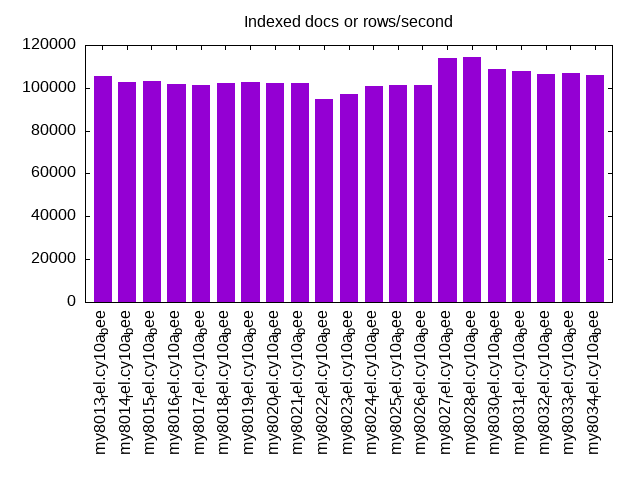

This is a report for the insert benchmark with 800M docs and 1 client(s). It is generated by scripts (bash, awk, sed) and Tufte might not be impressed. An overview of the insert benchmark is here and a short update is here. Below, by DBMS, I mean DBMS+version.config. An example is my8020.c10b40 where my means MySQL, 8020 is version 8.0.20 and c10b40 is the name for the configuration file.
The test server has 8 AMD cores, 16G RAM and an NVMe SSD. It is described here as the Beelink. The benchmark was run with 1 client and there were 1 or 3 connections per client (1 for queries or inserts without rate limits, 1+1 for rate limited inserts+deletes). There is 1 table. It loads 800M rows without secondary indexes, creates secondary indexes, then inserts 5M rows with a delete per insert to avoid growing the table. It then does 3 read+write tests for 1200s each that do queries as fast as possible with 100, 500 and then 1000 inserts/second/client concurrent with the queries and 1000 deletes/second to avoid growing the table. The database is larger than memory.
The tested DBMS are:
The numbers are inserts/s for l.i0 and l.i1, indexed docs (or rows) /s for l.x and queries/s for q100, q500, q1000. The values are the average rate over the entire test for inserts (IPS) and queries (QPS). The range of values for IPS and QPS is split into 3 parts: bottom 25%, middle 50%, top 25%. Values in the bottom 25% have a red background, values in the top 25% have a green background and values in the middle have no color. A gray background is used for values that can be ignored because the DBMS did not sustain the target insert rate. Red backgrounds are not used when the minimum value is within 80% of the max value.
| dbms | l.i0 | l.x | l.i1 | q100.1 | q500.1 | q1000.1 |
|---|---|---|---|---|---|---|
| my8013_rel.cy10a_bee | 65816 | 105666 | 1730 | 903 | 1046 | 934 |
| my8014_rel.cy10a_bee | 66884 | 102867 | 1616 | 912 | 1029 | 945 |
| my8015_rel.cy10a_bee | 67058 | 103212 | 1613 | 931 | 1037 | 952 |
| my8016_rel.cy10a_bee | 65306 | 101587 | 1634 | 905 | 1033 | 945 |
| my8017_rel.cy10a_bee | 66451 | 101432 | 1631 | 933 | 1043 | 942 |
| my8018_rel.cy10a_bee | 65248 | 102171 | 1613 | 937 | 1035 | 936 |
| my8019_rel.cy10a_bee | 60721 | 102511 | 1640 | 934 | 1035 | 941 |
| my8020_rel.cy10a_bee | 62083 | 102432 | 1746 | 979 | 1067 | 975 |
| my8021_rel.cy10a_bee | 60999 | 102054 | 1743 | 977 | 1065 | 978 |
| my8022_rel.cy10a_bee | 59657 | 94844 | 1659 | 952 | 1058 | 958 |
| my8023_rel.cy10a_bee | 60373 | 97100 | 1749 | 935 | 1032 | 934 |
| my8024_rel.cy10a_bee | 59876 | 101023 | 1790 | 938 | 1033 | 935 |
| my8025_rel.cy10a_bee | 59418 | 101484 | 1784 | 927 | 1024 | 924 |
| my8026_rel.cy10a_bee | 60980 | 101189 | 1799 | 934 | 1026 | 927 |
| my8027_rel.cy10a_bee | 60864 | 113845 | 1836 | 949 | 1039 | 944 |
| my8028_rel.cy10a_bee | 61896 | 114186 | 1838 | 959 | 1053 | 958 |
| my8030_rel.cy10a_bee | 56726 | 108842 | 1748 | 934 | 1032 | 934 |
| my8031_rel.cy10a_bee | 56907 | 107670 | 1729 | 926 | 1028 | 929 |
| my8032_rel.cy10a_bee | 54488 | 106623 | 1723 | 920 | 1020 | 921 |
| my8033_rel.cy10a_bee | 53626 | 107065 | 1707 | 922 | 1018 | 918 |
| my8034_rel.cy10a_bee | 54866 | 106142 | 1743 | 929 | 1022 | 924 |
This table has relative throughput, throughput for the DBMS relative to the DBMS in the first line, using the absolute throughput from the previous table. Values less than 0.95 have a yellow background. Values greater than 1.05 have a blue background.
| dbms | l.i0 | l.x | l.i1 | q100.1 | q500.1 | q1000.1 |
|---|---|---|---|---|---|---|
| my8013_rel.cy10a_bee | 1.00 | 1.00 | 1.00 | 1.00 | 1.00 | 1.00 |
| my8014_rel.cy10a_bee | 1.02 | 0.97 | 0.93 | 1.01 | 0.98 | 1.01 |
| my8015_rel.cy10a_bee | 1.02 | 0.98 | 0.93 | 1.03 | 0.99 | 1.02 |
| my8016_rel.cy10a_bee | 0.99 | 0.96 | 0.94 | 1.00 | 0.99 | 1.01 |
| my8017_rel.cy10a_bee | 1.01 | 0.96 | 0.94 | 1.03 | 1.00 | 1.01 |
| my8018_rel.cy10a_bee | 0.99 | 0.97 | 0.93 | 1.04 | 0.99 | 1.00 |
| my8019_rel.cy10a_bee | 0.92 | 0.97 | 0.95 | 1.03 | 0.99 | 1.01 |
| my8020_rel.cy10a_bee | 0.94 | 0.97 | 1.01 | 1.08 | 1.02 | 1.04 |
| my8021_rel.cy10a_bee | 0.93 | 0.97 | 1.01 | 1.08 | 1.02 | 1.05 |
| my8022_rel.cy10a_bee | 0.91 | 0.90 | 0.96 | 1.05 | 1.01 | 1.03 |
| my8023_rel.cy10a_bee | 0.92 | 0.92 | 1.01 | 1.04 | 0.99 | 1.00 |
| my8024_rel.cy10a_bee | 0.91 | 0.96 | 1.03 | 1.04 | 0.99 | 1.00 |
| my8025_rel.cy10a_bee | 0.90 | 0.96 | 1.03 | 1.03 | 0.98 | 0.99 |
| my8026_rel.cy10a_bee | 0.93 | 0.96 | 1.04 | 1.03 | 0.98 | 0.99 |
| my8027_rel.cy10a_bee | 0.92 | 1.08 | 1.06 | 1.05 | 0.99 | 1.01 |
| my8028_rel.cy10a_bee | 0.94 | 1.08 | 1.06 | 1.06 | 1.01 | 1.03 |
| my8030_rel.cy10a_bee | 0.86 | 1.03 | 1.01 | 1.03 | 0.99 | 1.00 |
| my8031_rel.cy10a_bee | 0.86 | 1.02 | 1.00 | 1.03 | 0.98 | 0.99 |
| my8032_rel.cy10a_bee | 0.83 | 1.01 | 1.00 | 1.02 | 0.98 | 0.99 |
| my8033_rel.cy10a_bee | 0.81 | 1.01 | 0.99 | 1.02 | 0.97 | 0.98 |
| my8034_rel.cy10a_bee | 0.83 | 1.00 | 1.01 | 1.03 | 0.98 | 0.99 |
This lists the average rate of inserts/s for the tests that do inserts concurrent with queries. For such tests the query rate is listed in the table above. The read+write tests are setup so that the insert rate should match the target rate every second. Cells that are not at least 95% of the target have a red background to indicate a failure to satisfy the target.
| dbms | q100.1 | q500.1 | q1000.1 |
|---|---|---|---|
| my8013_rel.cy10a_bee | 100 | 499 | 998 |
| my8014_rel.cy10a_bee | 100 | 499 | 998 |
| my8015_rel.cy10a_bee | 100 | 499 | 998 |
| my8016_rel.cy10a_bee | 100 | 499 | 998 |
| my8017_rel.cy10a_bee | 100 | 499 | 999 |
| my8018_rel.cy10a_bee | 100 | 498 | 998 |
| my8019_rel.cy10a_bee | 100 | 499 | 998 |
| my8020_rel.cy10a_bee | 100 | 499 | 998 |
| my8021_rel.cy10a_bee | 100 | 498 | 998 |
| my8022_rel.cy10a_bee | 100 | 499 | 998 |
| my8023_rel.cy10a_bee | 100 | 498 | 998 |
| my8024_rel.cy10a_bee | 100 | 499 | 998 |
| my8025_rel.cy10a_bee | 100 | 499 | 998 |
| my8026_rel.cy10a_bee | 100 | 499 | 998 |
| my8027_rel.cy10a_bee | 100 | 499 | 998 |
| my8028_rel.cy10a_bee | 100 | 499 | 998 |
| my8030_rel.cy10a_bee | 100 | 499 | 998 |
| my8031_rel.cy10a_bee | 100 | 499 | 998 |
| my8032_rel.cy10a_bee | 100 | 499 | 998 |
| my8033_rel.cy10a_bee | 100 | 499 | 998 |
| my8034_rel.cy10a_bee | 100 | 499 | 997 |
| target | 100 | 500 | 1000 |
l.i0: load without secondary indexes. Graphs for performance per 1-second interval are here.
Average throughput:
Insert response time histogram: each cell has the percentage of responses that take <= the time in the header and max is the max response time in seconds. For the max column values in the top 25% of the range have a red background and in the bottom 25% of the range have a green background. The red background is not used when the min value is within 80% of the max value.
| dbms | 256us | 1ms | 4ms | 16ms | 64ms | 256ms | 1s | 4s | 16s | gt | max |
|---|---|---|---|---|---|---|---|---|---|---|---|
| my8013_rel.cy10a_bee | 99.335 | 0.498 | 0.164 | 0.003 | nonzero | 0.299 | |||||
| my8014_rel.cy10a_bee | 99.341 | 0.492 | 0.164 | 0.003 | 0.111 | ||||||
| my8015_rel.cy10a_bee | 99.339 | 0.494 | 0.164 | 0.003 | 0.097 | ||||||
| my8016_rel.cy10a_bee | 99.327 | 0.503 | 0.167 | 0.003 | 0.110 | ||||||
| my8017_rel.cy10a_bee | 99.336 | 0.498 | 0.162 | 0.003 | 0.174 | ||||||
| my8018_rel.cy10a_bee | 99.342 | 0.359 | 0.296 | 0.004 | 0.151 | ||||||
| my8019_rel.cy10a_bee | 99.310 | 0.376 | 0.310 | 0.004 | 0.229 | ||||||
| my8020_rel.cy10a_bee | 99.302 | 0.523 | 0.171 | 0.004 | 0.124 | ||||||
| my8021_rel.cy10a_bee | 99.298 | 0.532 | 0.167 | 0.004 | 0.118 | ||||||
| my8022_rel.cy10a_bee | 99.507 | 0.316 | 0.173 | 0.004 | 0.193 | ||||||
| my8023_rel.cy10a_bee | 99.506 | 0.318 | 0.172 | 0.004 | 0.204 | ||||||
| my8024_rel.cy10a_bee | 99.444 | 0.410 | 0.143 | 0.004 | 0.111 | ||||||
| my8025_rel.cy10a_bee | 99.445 | 0.408 | 0.143 | 0.004 | 0.124 | ||||||
| my8026_rel.cy10a_bee | 99.453 | 0.392 | 0.152 | 0.004 | 0.197 | ||||||
| my8027_rel.cy10a_bee | 99.455 | 0.395 | 0.146 | 0.004 | 0.249 | ||||||
| my8028_rel.cy10a_bee | 99.424 | 0.425 | 0.147 | 0.004 | 0.184 | ||||||
| my8030_rel.cy10a_bee | 99.378 | 0.472 | 0.147 | 0.004 | 0.142 | ||||||
| my8031_rel.cy10a_bee | 99.379 | 0.470 | 0.147 | 0.004 | 0.105 | ||||||
| my8032_rel.cy10a_bee | 99.360 | 0.483 | 0.153 | 0.003 | 0.103 | ||||||
| my8033_rel.cy10a_bee | 99.353 | 0.491 | 0.152 | 0.003 | 0.106 | ||||||
| my8034_rel.cy10a_bee | 99.358 | 0.488 | 0.150 | 0.003 | 0.099 |
Performance metrics for the DBMS listed above. Some are normalized by throughput, others are not. Legend for results is here.
ips qps rps rmbps wps wmbps rpq rkbpq wpi wkbpi csps cpups cspq cpupq dbgb1 dbgb2 rss maxop p50 p99 tag 65816 0 0 0.0 369.9 25.6 0.000 0.000 0.006 0.398 53961 34.4 0.820 42 52.4 55.0 11.1 0.299 65829 59273 800m.my8013_rel.cy10a_bee 66884 0 0 0.0 360.0 25.5 0.000 0.000 0.005 0.390 18948 22.9 0.283 27 52.4 61.0 11.1 0.111 66726 59935 800m.my8014_rel.cy10a_bee 67058 0 0 0.0 360.8 25.6 0.000 0.000 0.005 0.390 18958 22.9 0.283 27 52.4 61.0 11.1 0.097 66768 60234 800m.my8015_rel.cy10a_bee 65306 0 0 0.0 352.0 24.9 0.000 0.000 0.005 0.390 18511 22.7 0.283 28 52.4 61.0 11.1 0.110 65124 58623 800m.my8016_rel.cy10a_bee 66451 0 0 0.0 357.9 25.3 0.000 0.000 0.005 0.390 18877 22.6 0.284 27 52.4 61.0 11.1 0.174 66324 58780 800m.my8017_rel.cy10a_bee 65248 0 0 0.0 351.5 24.9 0.000 0.000 0.005 0.390 18626 22.2 0.285 27 52.4 61.0 11.1 0.151 65259 55938 800m.my8018_rel.cy10a_bee 60721 0 0 0.0 328.5 23.1 0.000 0.000 0.005 0.390 17105 21.6 0.282 28 52.4 61.0 11.1 0.229 60634 52141 800m.my8019_rel.cy10a_bee 62083 0 0 0.0 388.9 23.5 0.000 0.000 0.006 0.387 17109 21.8 0.276 28 52.4 61.0 11.1 0.124 61978 54944 800m.my8020_rel.cy10a_bee 60999 0 0 0.0 381.8 23.1 0.000 0.000 0.006 0.387 16851 21.6 0.276 28 52.4 61.0 11.1 0.118 60845 53937 800m.my8021_rel.cy10a_bee 59657 0 0 0.0 370.2 22.5 0.000 0.000 0.006 0.387 6676 19.9 0.112 27 52.4 61.0 11.1 0.193 59737 52939 800m.my8022_rel.cy10a_bee 60373 0 0 0.0 375.9 22.8 0.000 0.000 0.006 0.387 7036 20.1 0.117 27 52.4 61.0 11.0 0.204 60432 53463 800m.my8023_rel.cy10a_bee 59876 0 0 0.0 372.1 22.6 0.000 0.000 0.006 0.387 7004 20.1 0.117 27 52.4 61.0 11.0 0.111 60031 53041 800m.my8024_rel.cy10a_bee 59418 0 0 0.0 369.1 22.4 0.000 0.000 0.006 0.387 6951 20.1 0.117 27 52.4 61.0 11.0 0.124 59634 52745 800m.my8025_rel.cy10a_bee 60980 0 0 0.0 378.5 23.0 0.000 0.000 0.006 0.387 7120 20.4 0.117 27 52.4 61.0 11.0 0.197 61044 54258 800m.my8026_rel.cy10a_bee 60864 0 0 0.0 377.9 23.0 0.000 0.000 0.006 0.387 7138 20.3 0.117 27 52.4 61.0 11.0 0.249 60934 54168 800m.my8027_rel.cy10a_bee 61896 0 0 0.0 383.9 23.4 0.000 0.000 0.006 0.386 7181 20.7 0.116 27 52.4 61.0 11.1 0.184 62030 55040 800m.my8028_rel.cy10a_bee 56726 0 0 0.0 355.3 21.7 0.000 0.000 0.006 0.391 6803 20.0 0.120 28 52.4 61.0 11.1 0.142 56738 50449 800m.my8030_rel.cy10a_bee 56907 0 0 0.0 356.4 21.8 0.000 0.000 0.006 0.391 6831 20.0 0.120 28 52.4 61.0 11.1 0.105 56961 50543 800m.my8031_rel.cy10a_bee 54488 0 0 0.0 341.6 20.8 0.000 0.000 0.006 0.392 6596 19.6 0.121 29 52.4 61.0 11.1 0.103 54640 49144 800m.my8032_rel.cy10a_bee 53626 0 0 0.0 336.2 20.5 0.000 0.000 0.006 0.392 6458 19.3 0.120 29 52.4 61.0 11.1 0.106 53672 48176 800m.my8033_rel.cy10a_bee 54866 0 0 0.0 341.2 20.9 0.000 0.000 0.006 0.390 6603 19.7 0.120 29 52.4 61.0 11.1 0.099 55039 49267 800m.my8034_rel.cy10a_bee
l.x: create secondary indexes.
Average throughput:
Performance metrics for the DBMS listed above. Some are normalized by throughput, others are not. Legend for results is here.
ips qps rps rmbps wps wmbps rpq rkbpq wpi wkbpi csps cpups cspq cpupq dbgb1 dbgb2 rss maxop p50 p99 tag 105666 0 623 99.0 752.8 118.5 0.006 0.960 0.007 1.149 9515 13.8 0.090 10 117.2 119.8 11.3 0.015 NA NA 800m.my8013_rel.cy10a_bee 102867 0 612 96.4 736.9 115.4 0.006 0.960 0.007 1.149 6559 12.2 0.064 9 117.2 125.8 11.3 0.014 NA NA 800m.my8014_rel.cy10a_bee 103212 0 611 96.8 734.0 115.7 0.006 0.960 0.007 1.148 6620 12.2 0.064 9 117.2 125.8 11.3 0.023 NA NA 800m.my8015_rel.cy10a_bee 101587 0 605 95.3 721.1 113.9 0.006 0.960 0.007 1.148 6530 12.2 0.064 10 117.2 125.8 11.3 0.013 NA NA 800m.my8016_rel.cy10a_bee 101432 0 596 95.2 715.8 113.7 0.006 0.961 0.007 1.148 6602 12.2 0.065 10 117.2 125.8 11.3 0.021 NA NA 800m.my8017_rel.cy10a_bee 102171 0 602 95.8 724.6 114.6 0.006 0.960 0.007 1.148 6652 12.2 0.065 10 117.2 125.8 11.3 0.020 NA NA 800m.my8018_rel.cy10a_bee 102511 0 616 96.2 731.0 114.9 0.006 0.961 0.007 1.148 6520 12.2 0.064 10 117.2 125.8 11.3 0.024 NA NA 800m.my8019_rel.cy10a_bee 102432 0 610 96.1 827.4 114.9 0.006 0.960 0.008 1.148 6377 12.1 0.062 9 117.2 125.8 11.3 0.020 NA NA 800m.my8020_rel.cy10a_bee 102054 0 602 95.7 830.0 114.6 0.006 0.960 0.008 1.149 6387 12.1 0.063 9 117.2 125.8 11.3 0.011 NA NA 800m.my8021_rel.cy10a_bee 94844 0 565 88.9 770.8 106.4 0.006 0.960 0.008 1.149 5063 11.7 0.053 10 117.2 125.8 11.3 0.027 NA NA 800m.my8022_rel.cy10a_bee 97100 0 577 91.1 789.3 108.9 0.006 0.960 0.008 1.149 6117 11.9 0.063 10 117.2 125.8 11.2 0.023 NA NA 800m.my8023_rel.cy10a_bee 101023 0 606 94.7 823.5 113.4 0.006 0.960 0.008 1.149 6273 12.1 0.062 10 117.2 125.8 11.2 0.015 NA NA 800m.my8024_rel.cy10a_bee 101484 0 609 95.2 825.2 113.8 0.006 0.960 0.008 1.149 6283 12.1 0.062 10 117.2 125.8 11.2 0.021 NA NA 800m.my8025_rel.cy10a_bee 101189 0 606 94.9 820.1 113.5 0.006 0.960 0.008 1.148 6245 12.1 0.062 10 117.2 125.8 11.2 0.012 NA NA 800m.my8026_rel.cy10a_bee 113845 0 1838 172.4 2205.6 153.3 0.016 1.550 0.019 1.378 8830 43.6 0.078 31 117.2 125.8 11.2 0.011 NA NA 800m.my8027_rel.cy10a_bee 114186 0 1843 172.8 2212.0 153.6 0.016 1.550 0.019 1.378 8843 43.7 0.077 31 117.2 125.8 11.2 0.016 NA NA 800m.my8028_rel.cy10a_bee 108842 0 1754 164.5 2164.9 146.4 0.016 1.547 0.020 1.377 8675 43.3 0.080 32 117.2 125.8 11.3 0.012 NA NA 800m.my8030_rel.cy10a_bee 107670 0 1738 163.0 2130.6 144.8 0.016 1.550 0.020 1.377 8604 43.5 0.080 32 117.2 125.8 11.3 0.019 NA NA 800m.my8031_rel.cy10a_bee 106623 0 1719 161.1 2109.9 143.3 0.016 1.547 0.020 1.377 8512 43.2 0.080 32 117.2 125.8 11.3 0.016 NA NA 800m.my8032_rel.cy10a_bee 107065 0 1727 161.8 2128.3 144.1 0.016 1.547 0.020 1.378 8574 43.4 0.080 32 117.2 125.8 11.3 0.014 NA NA 800m.my8033_rel.cy10a_bee 106142 0 1714 160.6 2062.4 142.8 0.016 1.550 0.019 1.378 8499 43.6 0.080 33 117.2 125.8 11.3 0.012 NA NA 800m.my8034_rel.cy10a_bee
l.i1: continue load after secondary indexes created. Graphs for performance per 1-second interval are here.
Average throughput:
Insert response time histogram: each cell has the percentage of responses that take <= the time in the header and max is the max response time in seconds. For the max column values in the top 25% of the range have a red background and in the bottom 25% of the range have a green background. The red background is not used when the min value is within 80% of the max value.
| dbms | 256us | 1ms | 4ms | 16ms | 64ms | 256ms | 1s | 4s | 16s | gt | max |
|---|---|---|---|---|---|---|---|---|---|---|---|
| my8013_rel.cy10a_bee | 31.457 | 61.764 | 6.776 | 0.003 | 0.308 | ||||||
| my8014_rel.cy10a_bee | 22.323 | 70.360 | 7.314 | 0.003 | 0.469 | ||||||
| my8015_rel.cy10a_bee | 22.070 | 70.510 | 7.416 | 0.004 | 0.501 | ||||||
| my8016_rel.cy10a_bee | 24.593 | 68.119 | 7.285 | 0.003 | 0.438 | ||||||
| my8017_rel.cy10a_bee | 24.174 | 68.505 | 7.316 | 0.005 | 0.662 | ||||||
| my8018_rel.cy10a_bee | 22.891 | 69.530 | 7.575 | 0.004 | 0.404 | ||||||
| my8019_rel.cy10a_bee | 24.378 | 68.493 | 7.128 | 0.001 | 0.396 | ||||||
| my8020_rel.cy10a_bee | 27.856 | 65.646 | 6.496 | 0.002 | 0.379 | ||||||
| my8021_rel.cy10a_bee | 27.351 | 66.126 | 6.521 | 0.002 | 0.375 | ||||||
| my8022_rel.cy10a_bee | 23.701 | 68.217 | 8.079 | 0.003 | 0.296 | ||||||
| my8023_rel.cy10a_bee | 30.883 | 61.653 | 7.462 | 0.002 | 0.525 | ||||||
| my8024_rel.cy10a_bee | 30.917 | 63.092 | 5.988 | 0.003 | 0.659 | ||||||
| my8025_rel.cy10a_bee | 30.423 | 63.573 | 6.001 | 0.003 | 0.349 | ||||||
| my8026_rel.cy10a_bee | 31.295 | 62.748 | 5.955 | 0.002 | 0.656 | ||||||
| my8027_rel.cy10a_bee | 33.397 | 60.836 | 5.766 | 0.001 | 0.310 | ||||||
| my8028_rel.cy10a_bee | 33.137 | 61.171 | 5.691 | 0.001 | 0.269 | ||||||
| my8030_rel.cy10a_bee | 27.319 | 66.351 | 6.328 | 0.002 | 0.446 | ||||||
| my8031_rel.cy10a_bee | 26.387 | 67.171 | 6.442 | 0.244 | |||||||
| my8032_rel.cy10a_bee | 25.973 | 67.475 | 6.550 | 0.002 | 0.392 | ||||||
| my8033_rel.cy10a_bee | 24.954 | 68.458 | 6.587 | 0.001 | 0.587 | ||||||
| my8034_rel.cy10a_bee | 28.273 | 65.447 | 6.279 | 0.001 | 0.358 |
Delete response time histogram: each cell has the percentage of responses that take <= the time in the header and max is the max response time in seconds. For the max column values in the top 25% of the range have a red background and in the bottom 25% of the range have a green background. The red background is not used when the min value is within 80% of the max value.
| dbms | 256us | 1ms | 4ms | 16ms | 64ms | 256ms | 1s | 4s | 16s | gt | max |
|---|---|---|---|---|---|---|---|---|---|---|---|
| my8013_rel.cy10a_bee | 82.726 | 15.260 | 1.976 | 0.038 | 0.118 | ||||||
| my8014_rel.cy10a_bee | 70.093 | 28.330 | 1.565 | 0.012 | 0.148 | ||||||
| my8015_rel.cy10a_bee | 70.085 | 28.477 | 1.416 | 0.022 | 0.098 | ||||||
| my8016_rel.cy10a_bee | 81.331 | 17.160 | 1.490 | 0.019 | 0.117 | ||||||
| my8017_rel.cy10a_bee | 79.272 | 19.281 | 1.420 | 0.027 | 0.102 | ||||||
| my8018_rel.cy10a_bee | 80.196 | 18.465 | 1.320 | 0.019 | 0.171 | ||||||
| my8019_rel.cy10a_bee | 75.582 | 23.084 | 1.317 | 0.017 | 0.123 | ||||||
| my8020_rel.cy10a_bee | 77.227 | 21.497 | 1.250 | 0.026 | 0.101 | ||||||
| my8021_rel.cy10a_bee | 70.504 | 28.219 | 1.249 | 0.028 | 0.131 | ||||||
| my8022_rel.cy10a_bee | 55.933 | 43.572 | 0.486 | 0.009 | 0.121 | ||||||
| my8023_rel.cy10a_bee | 57.153 | 42.498 | 0.337 | 0.012 | 0.138 | ||||||
| my8024_rel.cy10a_bee | 51.818 | 47.772 | 0.399 | 0.011 | 0.134 | ||||||
| my8025_rel.cy10a_bee | 53.047 | 46.587 | 0.358 | 0.008 | 0.138 | ||||||
| my8026_rel.cy10a_bee | 72.395 | 27.278 | 0.318 | 0.009 | 0.110 | ||||||
| my8027_rel.cy10a_bee | 68.088 | 31.547 | 0.359 | 0.006 | 0.220 | ||||||
| my8028_rel.cy10a_bee | 70.565 | 29.169 | 0.260 | 0.006 | 0.104 | ||||||
| my8030_rel.cy10a_bee | 24.141 | 75.458 | 0.397 | 0.004 | 0.091 | ||||||
| my8031_rel.cy10a_bee | 26.402 | 73.205 | 0.390 | 0.003 | 0.100 | ||||||
| my8032_rel.cy10a_bee | 23.516 | 76.054 | 0.427 | 0.003 | 0.107 | ||||||
| my8033_rel.cy10a_bee | 23.417 | 76.175 | 0.402 | 0.006 | 0.127 | ||||||
| my8034_rel.cy10a_bee | 25.187 | 74.434 | 0.377 | 0.002 | 0.068 |
Performance metrics for the DBMS listed above. Some are normalized by throughput, others are not. Legend for results is here.
ips qps rps rmbps wps wmbps rpq rkbpq wpi wkbpi csps cpups cspq cpupq dbgb1 dbgb2 rss maxop p50 p99 tag 1730 0 8713 136.1 12658.6 403.3 5.038 80.607 7.319 238.812 94914 34.0 54.879 1573 148.7 151.7 10.7 0.308 1598 749 800m.my8013_rel.cy10a_bee 1616 0 8175 127.7 10875.2 347.9 5.059 80.945 6.730 220.480 78724 19.7 48.716 975 148.7 157.7 10.5 0.469 1498 649 800m.my8014_rel.cy10a_bee 1613 0 8169 127.6 10864.0 347.6 5.065 81.040 6.736 220.671 78415 19.7 48.617 977 148.7 157.6 10.5 0.501 1499 649 800m.my8015_rel.cy10a_bee 1634 0 8282 129.4 10998.7 351.9 5.069 81.103 6.732 220.547 79068 19.4 48.392 950 148.7 157.7 10.5 0.438 1499 649 800m.my8016_rel.cy10a_bee 1631 0 8315 129.9 11063.2 353.9 5.097 81.551 6.782 222.172 80567 19.0 49.388 932 148.5 157.6 10.5 0.662 1500 649 800m.my8017_rel.cy10a_bee 1613 0 8226 128.5 10919.9 349.3 5.098 81.572 6.768 221.666 79901 19.1 49.523 947 148.5 157.6 10.5 0.404 1498 649 800m.my8018_rel.cy10a_bee 1640 0 8304 129.8 11036.3 353.1 5.064 81.026 6.730 220.500 80381 19.2 49.019 937 148.7 157.7 10.5 0.396 1499 650 800m.my8019_rel.cy10a_bee 1746 0 8907 139.2 14267.3 379.1 5.102 81.630 8.172 222.364 71840 17.9 41.150 820 148.4 157.4 10.5 0.379 1648 699 800m.my8020_rel.cy10a_bee 1743 0 8918 139.3 14289.8 379.6 5.116 81.851 8.197 222.992 71977 18.0 41.288 826 148.3 157.3 10.5 0.375 1648 699 800m.my8021_rel.cy10a_bee 1659 0 8504 132.9 13592.0 361.2 5.125 81.996 8.191 222.920 57432 16.7 34.610 805 148.3 157.2 10.5 0.296 1548 599 800m.my8022_rel.cy10a_bee 1749 0 8948 139.8 14266.9 379.4 5.116 81.862 8.158 222.127 61023 23.1 34.894 1057 148.3 157.4 10.7 0.525 1648 649 800m.my8023_rel.cy10a_bee 1790 0 9150 143.0 14633.0 389.1 5.112 81.787 8.174 222.564 63058 23.7 35.226 1059 148.3 157.4 10.7 0.659 1698 649 800m.my8024_rel.cy10a_bee 1784 0 9059 141.5 14472.4 384.9 5.078 81.252 8.113 220.962 62373 23.7 34.967 1063 148.5 157.5 10.7 0.349 1648 649 800m.my8025_rel.cy10a_bee 1799 0 9213 143.9 14673.0 390.2 5.120 81.927 8.155 222.060 63368 23.6 35.220 1049 148.3 157.2 10.7 0.656 1698 699 800m.my8026_rel.cy10a_bee 1836 0 9336 145.9 14956.3 397.7 5.086 81.382 8.148 221.896 65767 23.3 35.831 1016 148.4 157.4 10.7 0.310 1699 699 800m.my8027_rel.cy10a_bee 1838 0 9391 146.7 14848.8 395.1 5.111 81.773 8.081 220.179 64606 23.1 35.160 1006 148.3 157.3 10.7 0.269 1699 699 800m.my8028_rel.cy10a_bee 1748 0 9015 140.9 14581.5 399.1 5.158 82.534 8.344 233.824 61638 23.9 35.270 1094 148.1 157.1 10.7 0.446 1648 699 800m.my8030_rel.cy10a_bee 1729 0 8924 139.4 14448.8 395.4 5.162 82.588 8.357 234.185 61151 23.9 35.370 1106 148.1 157.1 10.7 0.244 1599 650 800m.my8031_rel.cy10a_bee 1723 0 8847 138.2 14332.3 392.3 5.135 82.161 8.319 233.185 60461 24.1 35.093 1119 148.2 157.3 10.7 0.392 1599 649 800m.my8032_rel.cy10a_bee 1707 0 8804 137.6 14260.0 390.3 5.157 82.519 8.354 234.110 60387 24.0 35.376 1125 148.1 157.1 10.7 0.587 1598 650 800m.my8033_rel.cy10a_bee 1743 0 8962 140.0 14525.6 397.6 5.143 82.283 8.335 233.629 60209 24.2 34.549 1111 148.2 157.2 10.7 0.358 1648 699 800m.my8034_rel.cy10a_bee
q100.1: range queries with 100 insert/s per client. Graphs for performance per 1-second interval are here.
Average throughput:
Query response time histogram: each cell has the percentage of responses that take <= the time in the header and max is the max response time in seconds. For max values in the top 25% of the range have a red background and in the bottom 25% of the range have a green background. The red background is not used when the min value is within 80% of the max value.
| dbms | 256us | 1ms | 4ms | 16ms | 64ms | 256ms | 1s | 4s | 16s | gt | max |
|---|---|---|---|---|---|---|---|---|---|---|---|
| my8013_rel.cy10a_bee | 15.892 | 26.081 | 55.422 | 2.590 | 0.014 | 0.045 | |||||
| my8014_rel.cy10a_bee | 13.257 | 28.478 | 56.172 | 2.083 | 0.010 | 0.047 | |||||
| my8015_rel.cy10a_bee | 13.927 | 28.069 | 56.019 | 1.974 | 0.010 | 0.043 | |||||
| my8016_rel.cy10a_bee | 12.796 | 28.741 | 56.343 | 2.109 | 0.011 | 0.042 | |||||
| my8017_rel.cy10a_bee | 12.974 | 28.746 | 56.324 | 1.946 | 0.010 | 0.051 | |||||
| my8018_rel.cy10a_bee | 14.139 | 27.822 | 55.965 | 2.064 | 0.010 | nonzero | 0.066 | ||||
| my8019_rel.cy10a_bee | 13.311 | 28.515 | 56.078 | 2.086 | 0.011 | 0.046 | |||||
| my8020_rel.cy10a_bee | 12.429 | 29.792 | 56.272 | 1.481 | 0.027 | 0.051 | |||||
| my8021_rel.cy10a_bee | 12.341 | 29.788 | 56.360 | 1.485 | 0.026 | 0.051 | |||||
| my8022_rel.cy10a_bee | 5.592 | 35.704 | 57.157 | 1.522 | 0.025 | 0.048 | |||||
| my8023_rel.cy10a_bee | 3.626 | 37.428 | 57.283 | 1.642 | 0.022 | nonzero | 0.086 | ||||
| my8024_rel.cy10a_bee | 3.599 | 37.589 | 57.103 | 1.688 | 0.020 | nonzero | 0.086 | ||||
| my8025_rel.cy10a_bee | 2.964 | 37.954 | 57.330 | 1.731 | 0.021 | 0.050 | |||||
| my8026_rel.cy10a_bee | 3.418 | 37.753 | 57.127 | 1.680 | 0.022 | nonzero | 0.091 | ||||
| my8027_rel.cy10a_bee | 3.688 | 37.690 | 56.940 | 1.660 | 0.022 | nonzero | 0.088 | ||||
| my8028_rel.cy10a_bee | 4.496 | 37.129 | 56.805 | 1.546 | 0.025 | 0.049 | |||||
| my8030_rel.cy10a_bee | 3.711 | 37.551 | 57.059 | 1.654 | 0.024 | nonzero | 0.067 | ||||
| my8031_rel.cy10a_bee | 3.594 | 37.381 | 57.341 | 1.659 | 0.025 | 0.048 | |||||
| my8032_rel.cy10a_bee | 3.180 | 37.698 | 57.402 | 1.692 | 0.027 | 0.052 | |||||
| my8033_rel.cy10a_bee | 3.042 | 37.862 | 57.384 | 1.686 | 0.026 | 0.049 | |||||
| my8034_rel.cy10a_bee | 3.785 | 37.290 | 57.221 | 1.678 | 0.025 | 0.060 |
Insert response time histogram: each cell has the percentage of responses that take <= the time in the header and max is the max response time in seconds. For max values in the top 25% of the range have a red background and in the bottom 25% of the range have a green background. The red background is not used when the min value is within 80% of the max value.
| dbms | 256us | 1ms | 4ms | 16ms | 64ms | 256ms | 1s | 4s | 16s | gt | max |
|---|---|---|---|---|---|---|---|---|---|---|---|
| my8013_rel.cy10a_bee | 37.750 | 52.417 | 9.833 | 0.111 | |||||||
| my8014_rel.cy10a_bee | 0.208 | 90.042 | 9.750 | 0.104 | |||||||
| my8015_rel.cy10a_bee | 28.458 | 60.583 | 10.958 | 0.104 | |||||||
| my8016_rel.cy10a_bee | 0.042 | 90.417 | 9.542 | 0.121 | |||||||
| my8017_rel.cy10a_bee | 29.750 | 63.000 | 7.250 | 0.127 | |||||||
| my8018_rel.cy10a_bee | 23.750 | 74.917 | 1.333 | 0.100 | |||||||
| my8019_rel.cy10a_bee | 32.792 | 65.250 | 1.958 | 0.101 | |||||||
| my8020_rel.cy10a_bee | 32.833 | 64.417 | 2.750 | 0.110 | |||||||
| my8021_rel.cy10a_bee | 27.292 | 71.250 | 1.458 | 0.110 | |||||||
| my8022_rel.cy10a_bee | 26.917 | 71.042 | 2.042 | 0.108 | |||||||
| my8023_rel.cy10a_bee | 34.458 | 61.833 | 3.708 | 0.119 | |||||||
| my8024_rel.cy10a_bee | 29.625 | 68.958 | 1.417 | 0.117 | |||||||
| my8025_rel.cy10a_bee | 34.417 | 61.708 | 3.875 | 0.116 | |||||||
| my8026_rel.cy10a_bee | 32.208 | 65.542 | 2.250 | 0.107 | |||||||
| my8027_rel.cy10a_bee | 38.875 | 57.042 | 4.083 | 0.124 | |||||||
| my8028_rel.cy10a_bee | 37.583 | 58.833 | 3.583 | 0.118 | |||||||
| my8030_rel.cy10a_bee | 28.000 | 67.833 | 4.167 | 0.102 | |||||||
| my8031_rel.cy10a_bee | 25.042 | 72.375 | 2.583 | 0.102 | |||||||
| my8032_rel.cy10a_bee | 21.083 | 75.583 | 3.333 | 0.126 | |||||||
| my8033_rel.cy10a_bee | 26.833 | 68.875 | 4.292 | 0.121 | |||||||
| my8034_rel.cy10a_bee | 27.542 | 69.083 | 3.375 | 0.121 |
Delete response time histogram: each cell has the percentage of responses that take <= the time in the header and max is the max response time in seconds. For max values in the top 25% of the range have a red background and in the bottom 25% of the range have a green background. The red background is not used when the min value is within 80% of the max value.
| dbms | 256us | 1ms | 4ms | 16ms | 64ms | 256ms | 1s | 4s | 16s | gt | max |
|---|---|---|---|---|---|---|---|---|---|---|---|
| my8013_rel.cy10a_bee | 69.667 | 29.625 | 0.708 | 0.058 | |||||||
| my8014_rel.cy10a_bee | 50.083 | 48.208 | 1.708 | 0.034 | |||||||
| my8015_rel.cy10a_bee | 60.542 | 38.417 | 1.042 | 0.039 | |||||||
| my8016_rel.cy10a_bee | 42.375 | 55.708 | 1.917 | 0.044 | |||||||
| my8017_rel.cy10a_bee | 70.625 | 27.000 | 2.292 | 0.083 | 0.076 | ||||||
| my8018_rel.cy10a_bee | 69.667 | 28.333 | 2.000 | 0.051 | |||||||
| my8019_rel.cy10a_bee | 67.208 | 30.875 | 1.875 | 0.042 | 0.065 | ||||||
| my8020_rel.cy10a_bee | 69.375 | 30.125 | 0.500 | 0.038 | |||||||
| my8021_rel.cy10a_bee | 64.167 | 33.833 | 1.958 | 0.042 | 0.077 | ||||||
| my8022_rel.cy10a_bee | 38.708 | 60.500 | 0.792 | 0.054 | |||||||
| my8023_rel.cy10a_bee | 38.833 | 60.958 | 0.208 | 0.031 | |||||||
| my8024_rel.cy10a_bee | 40.125 | 59.125 | 0.750 | 0.040 | |||||||
| my8025_rel.cy10a_bee | 34.792 | 64.417 | 0.792 | 0.037 | |||||||
| my8026_rel.cy10a_bee | 47.875 | 50.958 | 1.125 | 0.042 | 0.065 | ||||||
| my8027_rel.cy10a_bee | 40.208 | 59.542 | 0.250 | 0.028 | |||||||
| my8028_rel.cy10a_bee | 43.125 | 56.458 | 0.417 | 0.050 | |||||||
| my8030_rel.cy10a_bee | 20.875 | 77.458 | 1.667 | 0.036 | |||||||
| my8031_rel.cy10a_bee | 21.333 | 77.250 | 1.417 | 0.047 | |||||||
| my8032_rel.cy10a_bee | 15.875 | 80.625 | 3.500 | 0.037 | |||||||
| my8033_rel.cy10a_bee | 18.083 | 80.833 | 1.083 | 0.040 | |||||||
| my8034_rel.cy10a_bee | 22.417 | 76.167 | 1.417 | 0.042 |
Performance metrics for the DBMS listed above. Some are normalized by throughput, others are not. Legend for results is here.
ips qps rps rmbps wps wmbps rpq rkbpq wpi wkbpi csps cpups cspq cpupq dbgb1 dbgb2 rss maxop p50 p99 tag 100 903 11454 179.0 9544.8 281.9 12.685 202.958 95.735 2895.077 88273 29.6 97.756 2622 148.7 151.7 10.7 0.045 911 719 800m.my8013_rel.cy10a_bee 100 912 11100 173.4 8547.0 237.6 12.169 194.702 85.556 2435.682 69742 15.7 76.455 1377 148.7 157.7 10.5 0.047 911 784 800m.my8014_rel.cy10a_bee 100 931 11313 176.8 8288.7 241.0 12.147 194.354 82.970 2470.336 69700 16.0 74.841 1374 148.7 157.6 10.5 0.043 928 831 800m.my8015_rel.cy10a_bee 100 905 11145 174.1 8677.9 240.2 12.318 197.083 87.040 2466.608 70169 15.6 77.552 1379 148.7 157.7 10.5 0.042 911 783 800m.my8016_rel.cy10a_bee 100 933 11527 180.1 8162.8 247.9 12.356 197.703 81.791 2543.986 70630 15.7 75.710 1346 148.5 157.6 10.5 0.051 943 799 800m.my8017_rel.cy10a_bee 100 937 11524 180.1 8021.0 246.7 12.294 196.709 80.371 2531.529 70327 15.8 75.032 1349 148.5 157.6 10.5 0.066 943 799 800m.my8018_rel.cy10a_bee 100 934 11512 179.9 8013.3 246.4 12.328 197.242 80.294 2527.879 69898 15.9 74.853 1362 148.7 157.7 10.5 0.046 943 784 800m.my8019_rel.cy10a_bee 100 979 11641 181.9 9689.2 247.6 11.896 190.334 97.086 2540.620 59239 14.3 60.534 1169 148.4 157.4 10.5 0.051 975 815 800m.my8020_rel.cy10a_bee 100 977 11604 181.3 9661.3 246.9 11.881 190.094 96.806 2533.176 59156 14.4 60.567 1179 148.3 157.3 10.5 0.051 975 831 800m.my8021_rel.cy10a_bee 100 952 11434 178.7 9590.2 245.2 12.007 192.111 96.288 2521.276 50227 14.1 52.743 1184 148.3 157.2 10.5 0.048 944 800 800m.my8022_rel.cy10a_bee 100 935 11272 176.1 9514.9 243.4 12.050 192.799 95.435 2499.687 52305 18.0 55.917 1539 148.3 157.4 10.7 0.086 927 783 800m.my8023_rel.cy10a_bee 100 938 11288 176.4 9533.1 243.8 12.035 192.560 95.522 2501.679 52621 17.9 56.105 1527 148.3 157.4 10.7 0.086 927 783 800m.my8024_rel.cy10a_bee 100 927 11348 177.3 9676.9 247.5 12.240 195.842 96.963 2539.047 53043 18.2 57.214 1570 148.5 157.5 10.7 0.050 927 799 800m.my8025_rel.cy10a_bee 100 934 11214 175.2 9456.3 241.9 12.007 192.104 94.848 2484.317 52217 17.7 55.907 1516 148.3 157.3 10.7 0.091 927 799 800m.my8026_rel.cy10a_bee 100 949 11361 177.5 9569.9 244.8 11.974 191.592 95.795 2508.784 53723 17.4 56.622 1467 148.4 157.4 10.7 0.088 927 783 800m.my8027_rel.cy10a_bee 100 959 11353 177.4 9500.8 243.0 11.836 189.378 95.199 2492.929 52912 17.2 55.162 1435 148.3 157.4 10.7 0.049 943 799 800m.my8028_rel.cy10a_bee 100 934 11132 173.9 9615.9 249.5 11.917 190.666 96.449 2562.663 52311 17.9 55.996 1533 148.1 157.1 10.7 0.067 927 767 800m.my8030_rel.cy10a_bee 100 926 11124 173.8 9632.1 249.9 12.007 192.104 96.708 2569.638 52336 17.9 56.488 1546 148.1 157.1 10.7 0.048 911 751 800m.my8031_rel.cy10a_bee 100 920 11187 174.8 9761.7 253.3 12.164 194.625 97.910 2601.558 52674 18.3 57.273 1592 148.2 157.3 10.7 0.052 911 752 800m.my8032_rel.cy10a_bee 100 922 11119 173.7 9663.2 250.7 12.060 192.961 96.825 2572.754 52374 18.2 56.805 1579 148.1 157.1 10.7 0.049 911 767 800m.my8033_rel.cy10a_bee 100 929 11196 174.9 9728.3 252.5 12.054 192.860 97.772 2598.095 52472 18.0 56.494 1550 148.2 157.2 10.7 0.060 927 704 800m.my8034_rel.cy10a_bee
q500.1: range queries with 500 insert/s per client. Graphs for performance per 1-second interval are here.
Average throughput:
Query response time histogram: each cell has the percentage of responses that take <= the time in the header and max is the max response time in seconds. For max values in the top 25% of the range have a red background and in the bottom 25% of the range have a green background. The red background is not used when the min value is within 80% of the max value.
| dbms | 256us | 1ms | 4ms | 16ms | 64ms | 256ms | 1s | 4s | 16s | gt | max |
|---|---|---|---|---|---|---|---|---|---|---|---|
| my8013_rel.cy10a_bee | 12.323 | 32.379 | 54.251 | 1.041 | 0.006 | 0.039 | |||||
| my8014_rel.cy10a_bee | 11.083 | 33.173 | 54.652 | 1.086 | 0.006 | 0.038 | |||||
| my8015_rel.cy10a_bee | 11.063 | 33.330 | 54.569 | 1.033 | 0.006 | 0.048 | |||||
| my8016_rel.cy10a_bee | 11.004 | 33.276 | 54.699 | 1.015 | 0.006 | 0.045 | |||||
| my8017_rel.cy10a_bee | 11.080 | 33.464 | 54.536 | 0.916 | 0.005 | 0.040 | |||||
| my8018_rel.cy10a_bee | 10.612 | 33.795 | 54.630 | 0.959 | 0.005 | 0.040 | |||||
| my8019_rel.cy10a_bee | 10.865 | 33.500 | 54.621 | 1.009 | 0.005 | 0.040 | |||||
| my8020_rel.cy10a_bee | 10.416 | 34.493 | 54.332 | 0.745 | 0.013 | 0.047 | |||||
| my8021_rel.cy10a_bee | 10.040 | 35.003 | 54.149 | 0.794 | 0.014 | 0.049 | |||||
| my8022_rel.cy10a_bee | 6.574 | 38.139 | 54.528 | 0.744 | 0.015 | 0.048 | |||||
| my8023_rel.cy10a_bee | 4.127 | 40.428 | 54.585 | 0.848 | 0.012 | nonzero | 0.085 | ||||
| my8024_rel.cy10a_bee | 3.892 | 40.833 | 54.370 | 0.894 | 0.012 | nonzero | 0.091 | ||||
| my8025_rel.cy10a_bee | 3.652 | 40.682 | 54.791 | 0.863 | 0.012 | 0.047 | |||||
| my8026_rel.cy10a_bee | 3.904 | 40.496 | 54.750 | 0.839 | 0.011 | nonzero | 0.077 | ||||
| my8027_rel.cy10a_bee | 4.120 | 40.356 | 54.671 | 0.840 | 0.014 | nonzero | 0.078 | ||||
| my8028_rel.cy10a_bee | 5.038 | 39.690 | 54.451 | 0.811 | 0.010 | 0.049 | |||||
| my8030_rel.cy10a_bee | 4.427 | 39.971 | 54.742 | 0.850 | 0.009 | 0.047 | |||||
| my8031_rel.cy10a_bee | 4.189 | 40.143 | 54.797 | 0.862 | 0.009 | 0.047 | |||||
| my8032_rel.cy10a_bee | 3.687 | 40.539 | 54.903 | 0.860 | 0.010 | 0.047 | |||||
| my8033_rel.cy10a_bee | 3.414 | 40.798 | 54.908 | 0.869 | 0.010 | 0.047 | |||||
| my8034_rel.cy10a_bee | 3.944 | 40.339 | 54.847 | 0.861 | 0.010 | 0.049 |
Insert response time histogram: each cell has the percentage of responses that take <= the time in the header and max is the max response time in seconds. For max values in the top 25% of the range have a red background and in the bottom 25% of the range have a green background. The red background is not used when the min value is within 80% of the max value.
| dbms | 256us | 1ms | 4ms | 16ms | 64ms | 256ms | 1s | 4s | 16s | gt | max |
|---|---|---|---|---|---|---|---|---|---|---|---|
| my8013_rel.cy10a_bee | 40.758 | 58.758 | 0.483 | 0.099 | |||||||
| my8014_rel.cy10a_bee | 15.542 | 83.550 | 0.908 | 0.105 | |||||||
| my8015_rel.cy10a_bee | 16.158 | 83.292 | 0.550 | 0.093 | |||||||
| my8016_rel.cy10a_bee | 19.783 | 79.983 | 0.233 | 0.113 | |||||||
| my8017_rel.cy10a_bee | 20.467 | 79.250 | 0.283 | 0.090 | |||||||
| my8018_rel.cy10a_bee | 16.858 | 82.983 | 0.158 | 0.099 | |||||||
| my8019_rel.cy10a_bee | 18.333 | 81.225 | 0.442 | 0.096 | |||||||
| my8020_rel.cy10a_bee | 20.367 | 79.583 | 0.050 | 0.090 | |||||||
| my8021_rel.cy10a_bee | 17.033 | 80.700 | 2.267 | 0.126 | |||||||
| my8022_rel.cy10a_bee | 18.858 | 80.583 | 0.558 | 0.118 | |||||||
| my8023_rel.cy10a_bee | 36.750 | 62.675 | 0.575 | 0.119 | |||||||
| my8024_rel.cy10a_bee | 31.992 | 65.783 | 2.225 | 0.119 | |||||||
| my8025_rel.cy10a_bee | 34.933 | 64.975 | 0.092 | 0.098 | |||||||
| my8026_rel.cy10a_bee | 40.883 | 59.067 | 0.050 | 0.080 | |||||||
| my8027_rel.cy10a_bee | 46.975 | 52.917 | 0.108 | 0.098 | |||||||
| my8028_rel.cy10a_bee | 46.400 | 53.192 | 0.408 | 0.102 | |||||||
| my8030_rel.cy10a_bee | 31.542 | 68.425 | 0.033 | 0.075 | |||||||
| my8031_rel.cy10a_bee | 26.525 | 73.333 | 0.142 | 0.083 | |||||||
| my8032_rel.cy10a_bee | 25.150 | 74.683 | 0.167 | 0.103 | |||||||
| my8033_rel.cy10a_bee | 21.125 | 78.708 | 0.167 | 0.085 | |||||||
| my8034_rel.cy10a_bee | 27.992 | 72.008 | 0.061 |
Delete response time histogram: each cell has the percentage of responses that take <= the time in the header and max is the max response time in seconds. For max values in the top 25% of the range have a red background and in the bottom 25% of the range have a green background. The red background is not used when the min value is within 80% of the max value.
| dbms | 256us | 1ms | 4ms | 16ms | 64ms | 256ms | 1s | 4s | 16s | gt | max |
|---|---|---|---|---|---|---|---|---|---|---|---|
| my8013_rel.cy10a_bee | 94.133 | 5.250 | 0.617 | 0.052 | |||||||
| my8014_rel.cy10a_bee | 90.192 | 9.533 | 0.275 | 0.046 | |||||||
| my8015_rel.cy10a_bee | 91.075 | 8.758 | 0.167 | 0.029 | |||||||
| my8016_rel.cy10a_bee | 92.050 | 7.700 | 0.250 | 0.028 | |||||||
| my8017_rel.cy10a_bee | 91.175 | 8.558 | 0.267 | 0.032 | |||||||
| my8018_rel.cy10a_bee | 90.958 | 8.792 | 0.250 | 0.037 | |||||||
| my8019_rel.cy10a_bee | 91.550 | 8.158 | 0.292 | 0.030 | |||||||
| my8020_rel.cy10a_bee | 91.483 | 8.342 | 0.175 | 0.032 | |||||||
| my8021_rel.cy10a_bee | 94.208 | 5.342 | 0.450 | 0.033 | |||||||
| my8022_rel.cy10a_bee | 97.108 | 2.883 | 0.008 | 0.072 | |||||||
| my8023_rel.cy10a_bee | 97.717 | 2.275 | 0.008 | 0.017 | |||||||
| my8024_rel.cy10a_bee | 96.500 | 3.500 | 0.014 | ||||||||
| my8025_rel.cy10a_bee | 98.017 | 1.975 | 0.008 | 0.017 | |||||||
| my8026_rel.cy10a_bee | 98.433 | 1.567 | 0.014 | ||||||||
| my8027_rel.cy10a_bee | 98.300 | 1.700 | 0.014 | ||||||||
| my8028_rel.cy10a_bee | 98.150 | 1.842 | 0.008 | 0.031 | |||||||
| my8030_rel.cy10a_bee | 85.733 | 14.250 | 0.017 | 0.024 | |||||||
| my8031_rel.cy10a_bee | 89.758 | 10.150 | 0.092 | 0.027 | |||||||
| my8032_rel.cy10a_bee | 83.100 | 16.850 | 0.050 | 0.024 | |||||||
| my8033_rel.cy10a_bee | 81.958 | 17.858 | 0.183 | 0.035 | |||||||
| my8034_rel.cy10a_bee | 90.125 | 9.808 | 0.067 | 0.026 |
Performance metrics for the DBMS listed above. Some are normalized by throughput, others are not. Legend for results is here.
ips qps rps rmbps wps wmbps rpq rkbpq wpi wkbpi csps cpups cspq cpupq dbgb1 dbgb2 rss maxop p50 p99 tag 499 1046 9079 141.9 4948.4 151.8 8.678 138.855 9.915 311.455 48708 15.9 46.557 1216 148.7 151.7 10.7 0.039 1055 974 800m.my8013_rel.cy10a_bee 499 1029 9433 147.4 5136.4 157.4 9.168 146.695 10.291 322.925 47668 12.6 46.329 980 148.7 157.7 10.5 0.038 1039 831 800m.my8014_rel.cy10a_bee 499 1037 9348 146.1 4985.4 152.9 9.013 144.205 9.989 313.793 46472 12.5 44.805 964 148.7 157.6 10.5 0.048 1039 895 800m.my8015_rel.cy10a_bee 499 1033 9339 145.9 4992.6 153.2 9.043 144.695 10.003 314.310 46114 12.4 44.654 961 148.7 157.7 10.5 0.045 1039 895 800m.my8016_rel.cy10a_bee 499 1043 9042 141.3 4604.7 141.1 8.666 138.663 9.226 289.556 44220 11.8 42.385 905 148.5 157.6 10.5 0.040 1039 975 800m.my8017_rel.cy10a_bee 498 1035 9060 141.6 4671.9 143.3 8.753 140.043 9.376 294.562 44371 11.9 42.866 920 148.5 157.6 10.5 0.040 1039 943 800m.my8018_rel.cy10a_bee 499 1035 9139 142.8 4773.0 146.4 8.828 141.247 9.563 300.350 45182 12.0 43.645 927 148.7 157.7 10.5 0.040 1039 912 800m.my8019_rel.cy10a_bee 499 1067 9146 142.9 5391.5 137.6 8.572 137.148 10.802 282.377 38075 11.2 35.684 840 148.4 157.4 10.5 0.047 1071 991 800m.my8020_rel.cy10a_bee 498 1065 9113 142.4 5396.5 137.6 8.556 136.892 10.830 282.766 39271 11.2 36.871 841 148.3 157.3 10.5 0.049 1071 990 800m.my8021_rel.cy10a_bee 499 1058 9081 141.9 5373.2 137.2 8.583 137.323 10.766 281.484 34468 11.1 32.575 839 148.3 157.2 10.5 0.048 1055 1005 800m.my8022_rel.cy10a_bee 498 1032 8956 139.9 5348.6 136.6 8.676 138.811 10.734 280.668 36280 12.8 35.145 992 148.3 157.4 10.7 0.085 1039 975 800m.my8023_rel.cy10a_bee 499 1033 8923 139.4 5354.6 136.6 8.640 138.243 10.737 280.485 36048 12.9 34.906 999 148.3 157.4 10.7 0.091 1039 974 800m.my8024_rel.cy10a_bee 499 1024 8916 139.3 5362.4 136.9 8.709 139.347 10.753 281.189 36336 12.8 35.492 1000 148.5 157.5 10.7 0.047 1023 959 800m.my8025_rel.cy10a_bee 499 1026 8932 139.6 5334.1 136.2 8.702 139.237 10.696 279.733 36395 12.6 35.459 982 148.3 157.3 10.7 0.077 1023 973 800m.my8026_rel.cy10a_bee 499 1039 9008 140.7 5353.3 136.8 8.672 138.757 10.734 280.861 37179 12.4 35.794 955 148.4 157.4 10.7 0.078 1039 975 800m.my8027_rel.cy10a_bee 499 1053 9057 141.5 5336.9 136.3 8.601 137.610 10.693 279.678 36569 12.3 34.725 934 148.3 157.4 10.7 0.049 1055 991 800m.my8028_rel.cy10a_bee 499 1032 8956 139.9 5438.6 141.7 8.679 138.859 10.897 290.819 36857 12.8 35.718 992 148.1 157.1 10.7 0.047 1038 974 800m.my8030_rel.cy10a_bee 499 1028 8928 139.5 5437.8 141.7 8.685 138.959 10.895 290.761 36702 12.9 35.702 1004 148.1 157.1 10.7 0.047 1023 959 800m.my8031_rel.cy10a_bee 499 1020 8892 138.9 5442.9 141.8 8.718 139.482 10.914 291.216 36564 13.0 35.847 1020 148.2 157.3 10.7 0.047 1023 959 800m.my8032_rel.cy10a_bee 499 1018 8881 138.8 5441.1 141.8 8.727 139.636 10.911 291.240 36678 13.0 36.044 1022 148.1 157.1 10.7 0.047 1023 959 800m.my8033_rel.cy10a_bee 499 1022 8905 139.1 5434.0 141.6 8.714 139.418 10.896 290.813 36638 12.9 35.850 1010 148.2 157.2 10.7 0.049 1023 959 800m.my8034_rel.cy10a_bee
q1000.1: range queries with 1000 insert/s per client. Graphs for performance per 1-second interval are here.
Average throughput:
Query response time histogram: each cell has the percentage of responses that take <= the time in the header and max is the max response time in seconds. For max values in the top 25% of the range have a red background and in the bottom 25% of the range have a green background. The red background is not used when the min value is within 80% of the max value.
| dbms | 256us | 1ms | 4ms | 16ms | 64ms | 256ms | 1s | 4s | 16s | gt | max |
|---|---|---|---|---|---|---|---|---|---|---|---|
| my8013_rel.cy10a_bee | 14.028 | 28.165 | 55.454 | 2.339 | 0.013 | 0.057 | |||||
| my8014_rel.cy10a_bee | 12.666 | 29.346 | 56.045 | 1.933 | 0.010 | 0.042 | |||||
| my8015_rel.cy10a_bee | 12.696 | 29.531 | 55.827 | 1.936 | 0.011 | 0.043 | |||||
| my8016_rel.cy10a_bee | 12.264 | 29.794 | 55.990 | 1.941 | 0.010 | 0.047 | |||||
| my8017_rel.cy10a_bee | 12.141 | 29.784 | 56.067 | 1.997 | 0.011 | 0.043 | |||||
| my8018_rel.cy10a_bee | 11.664 | 30.122 | 56.126 | 2.077 | 0.011 | 0.049 | |||||
| my8019_rel.cy10a_bee | 12.083 | 29.863 | 56.009 | 2.033 | 0.011 | 0.043 | |||||
| my8020_rel.cy10a_bee | 11.927 | 30.206 | 56.335 | 1.493 | 0.039 | 0.051 | |||||
| my8021_rel.cy10a_bee | 11.727 | 30.549 | 56.235 | 1.453 | 0.035 | nonzero | 0.075 | ||||
| my8022_rel.cy10a_bee | 6.236 | 35.450 | 56.799 | 1.480 | 0.035 | 0.056 | |||||
| my8023_rel.cy10a_bee | 4.045 | 37.143 | 57.143 | 1.634 | 0.034 | 0.001 | 0.097 | ||||
| my8024_rel.cy10a_bee | 4.037 | 37.202 | 57.070 | 1.654 | 0.036 | nonzero | 0.081 | ||||
| my8025_rel.cy10a_bee | 3.396 | 37.721 | 57.154 | 1.693 | 0.036 | nonzero | 0.081 | ||||
| my8026_rel.cy10a_bee | 3.509 | 37.573 | 57.185 | 1.696 | 0.036 | 0.001 | 0.113 | ||||
| my8027_rel.cy10a_bee | 3.853 | 37.637 | 56.815 | 1.661 | 0.034 | nonzero | 0.158 | ||||
| my8028_rel.cy10a_bee | 4.961 | 36.720 | 56.743 | 1.546 | 0.029 | 0.047 | |||||
| my8030_rel.cy10a_bee | 4.174 | 37.058 | 57.023 | 1.717 | 0.028 | 0.053 | |||||
| my8031_rel.cy10a_bee | 4.150 | 37.114 | 56.914 | 1.795 | 0.026 | 0.053 | |||||
| my8032_rel.cy10a_bee | 3.344 | 37.671 | 57.186 | 1.771 | 0.027 | 0.050 | |||||
| my8033_rel.cy10a_bee | 3.017 | 37.936 | 57.293 | 1.728 | 0.026 | 0.050 | |||||
| my8034_rel.cy10a_bee | 3.832 | 37.235 | 57.164 | 1.741 | 0.029 | 0.049 |
Insert response time histogram: each cell has the percentage of responses that take <= the time in the header and max is the max response time in seconds. For max values in the top 25% of the range have a red background and in the bottom 25% of the range have a green background. The red background is not used when the min value is within 80% of the max value.
| dbms | 256us | 1ms | 4ms | 16ms | 64ms | 256ms | 1s | 4s | 16s | gt | max |
|---|---|---|---|---|---|---|---|---|---|---|---|
| my8013_rel.cy10a_bee | 60.337 | 38.012 | 1.650 | 0.121 | |||||||
| my8014_rel.cy10a_bee | 57.696 | 41.900 | 0.404 | 0.093 | |||||||
| my8015_rel.cy10a_bee | 49.979 | 49.508 | 0.513 | 0.097 | |||||||
| my8016_rel.cy10a_bee | 51.004 | 48.438 | 0.558 | 0.116 | |||||||
| my8017_rel.cy10a_bee | 49.875 | 49.496 | 0.629 | 0.119 | |||||||
| my8018_rel.cy10a_bee | 44.608 | 54.546 | 0.846 | 0.107 | |||||||
| my8019_rel.cy10a_bee | 47.250 | 51.858 | 0.892 | 0.114 | |||||||
| my8020_rel.cy10a_bee | 65.021 | 33.296 | 1.683 | 0.120 | |||||||
| my8021_rel.cy10a_bee | 66.992 | 31.767 | 1.238 | 0.004 | 0.315 | ||||||
| my8022_rel.cy10a_bee | 64.425 | 34.775 | 0.800 | 0.121 | |||||||
| my8023_rel.cy10a_bee | 80.308 | 18.912 | 0.779 | 0.121 | |||||||
| my8024_rel.cy10a_bee | 79.642 | 19.592 | 0.767 | 0.111 | |||||||
| my8025_rel.cy10a_bee | 77.979 | 21.200 | 0.821 | 0.116 | |||||||
| my8026_rel.cy10a_bee | 79.496 | 19.408 | 1.096 | 0.115 | |||||||
| my8027_rel.cy10a_bee | 84.971 | 14.250 | 0.779 | 0.111 | |||||||
| my8028_rel.cy10a_bee | 85.696 | 13.517 | 0.787 | 0.119 | |||||||
| my8030_rel.cy10a_bee | 73.446 | 24.975 | 1.579 | 0.118 | |||||||
| my8031_rel.cy10a_bee | 68.350 | 29.592 | 2.058 | 0.133 | |||||||
| my8032_rel.cy10a_bee | 66.112 | 32.392 | 1.496 | 0.116 | |||||||
| my8033_rel.cy10a_bee | 67.029 | 31.938 | 1.033 | 0.122 | |||||||
| my8034_rel.cy10a_bee | 70.487 | 27.683 | 1.829 | 0.139 |
Delete response time histogram: each cell has the percentage of responses that take <= the time in the header and max is the max response time in seconds. For max values in the top 25% of the range have a red background and in the bottom 25% of the range have a green background. The red background is not used when the min value is within 80% of the max value.
| dbms | 256us | 1ms | 4ms | 16ms | 64ms | 256ms | 1s | 4s | 16s | gt | max |
|---|---|---|---|---|---|---|---|---|---|---|---|
| my8013_rel.cy10a_bee | 96.737 | 2.525 | 0.733 | 0.004 | 0.083 | ||||||
| my8014_rel.cy10a_bee | 93.700 | 5.571 | 0.729 | 0.062 | |||||||
| my8015_rel.cy10a_bee | 95.008 | 4.575 | 0.417 | 0.043 | |||||||
| my8016_rel.cy10a_bee | 94.729 | 4.675 | 0.592 | 0.004 | 0.068 | ||||||
| my8017_rel.cy10a_bee | 95.754 | 3.883 | 0.363 | 0.044 | |||||||
| my8018_rel.cy10a_bee | 94.846 | 4.450 | 0.700 | 0.004 | 0.068 | ||||||
| my8019_rel.cy10a_bee | 94.750 | 4.588 | 0.662 | 0.052 | |||||||
| my8020_rel.cy10a_bee | 93.829 | 4.942 | 1.229 | 0.058 | |||||||
| my8021_rel.cy10a_bee | 95.017 | 4.292 | 0.692 | 0.057 | |||||||
| my8022_rel.cy10a_bee | 95.154 | 4.683 | 0.163 | 0.030 | |||||||
| my8023_rel.cy10a_bee | 95.896 | 3.900 | 0.204 | 0.048 | |||||||
| my8024_rel.cy10a_bee | 95.971 | 3.837 | 0.192 | 0.044 | |||||||
| my8025_rel.cy10a_bee | 95.146 | 4.650 | 0.204 | 0.053 | |||||||
| my8026_rel.cy10a_bee | 95.683 | 4.067 | 0.250 | 0.046 | |||||||
| my8027_rel.cy10a_bee | 96.312 | 3.450 | 0.237 | 0.059 | |||||||
| my8028_rel.cy10a_bee | 96.325 | 3.438 | 0.237 | 0.056 | |||||||
| my8030_rel.cy10a_bee | 62.950 | 36.725 | 0.325 | 0.059 | |||||||
| my8031_rel.cy10a_bee | 75.158 | 24.133 | 0.708 | 0.060 | |||||||
| my8032_rel.cy10a_bee | 60.592 | 39.025 | 0.383 | 0.055 | |||||||
| my8033_rel.cy10a_bee | 59.058 | 40.571 | 0.371 | 0.047 | |||||||
| my8034_rel.cy10a_bee | 74.462 | 25.233 | 0.304 | 0.034 |
Performance metrics for the DBMS listed above. Some are normalized by throughput, others are not. Legend for results is here.
ips qps rps rmbps wps wmbps rpq rkbpq wpi wkbpi csps cpups cspq cpupq dbgb1 dbgb2 rss maxop p50 p99 tag 998 934 11777 184.0 8901.0 274.0 12.603 201.643 8.916 281.063 79967 26.4 85.572 2260 148.7 151.7 10.7 0.057 928 816 800m.my8013_rel.cy10a_bee 998 945 11843 185.0 8106.5 249.6 12.534 200.539 8.120 256.031 69005 17.6 73.029 1490 148.7 157.7 10.5 0.042 943 879 800m.my8014_rel.cy10a_bee 998 952 11868 185.4 8107.0 249.2 12.472 199.550 8.127 255.794 69457 17.5 72.990 1471 148.7 157.6 10.5 0.043 959 847 800m.my8015_rel.cy10a_bee 998 945 11838 185.0 8111.5 249.5 12.531 200.503 8.132 256.129 69192 17.3 73.243 1465 148.7 157.7 10.5 0.047 943 815 800m.my8016_rel.cy10a_bee 999 942 11804 184.4 8107.1 249.2 12.529 200.465 8.114 255.398 70150 17.0 74.461 1444 148.5 157.6 10.5 0.043 943 863 800m.my8017_rel.cy10a_bee 998 936 11781 184.1 8094.9 249.0 12.586 201.378 8.109 255.428 70141 17.2 74.937 1470 148.5 157.6 10.5 0.049 943 815 800m.my8018_rel.cy10a_bee 998 941 11807 184.5 8104.9 249.2 12.542 200.678 8.119 255.645 69938 17.1 74.291 1453 148.7 157.7 10.5 0.043 943 815 800m.my8019_rel.cy10a_bee 998 975 12007 187.6 9760.4 249.8 12.316 197.058 9.777 256.273 58512 15.7 60.019 1288 148.4 157.4 10.5 0.051 975 895 800m.my8020_rel.cy10a_bee 998 978 12000 187.5 9743.9 249.4 12.273 196.373 9.761 255.806 58472 15.7 59.806 1285 148.3 157.3 10.5 0.075 975 911 800m.my8021_rel.cy10a_bee 998 958 11894 185.8 9716.8 248.9 12.413 198.604 9.733 255.267 50410 15.4 52.609 1286 148.3 157.2 10.5 0.056 959 895 800m.my8022_rel.cy10a_bee 998 934 11799 184.4 9715.9 248.8 12.639 202.227 9.740 255.428 54103 18.4 57.957 1577 148.3 157.4 10.7 0.097 927 863 800m.my8023_rel.cy10a_bee 998 935 11816 184.6 9727.1 249.1 12.640 202.234 9.751 255.691 54388 18.4 58.182 1575 148.3 157.4 10.7 0.081 942 863 800m.my8024_rel.cy10a_bee 998 924 11756 183.7 9729.4 249.2 12.728 203.647 9.754 255.785 54164 18.7 58.644 1620 148.5 157.5 10.7 0.081 927 831 800m.my8025_rel.cy10a_bee 998 927 11775 184.0 9720.0 248.9 12.701 203.209 9.737 255.296 54297 18.4 58.567 1588 148.3 157.3 10.7 0.113 927 847 800m.my8026_rel.cy10a_bee 998 944 11858 185.3 9752.3 249.8 12.565 201.034 9.769 256.242 55493 17.8 58.798 1509 148.4 157.4 10.7 0.158 943 863 800m.my8027_rel.cy10a_bee 998 958 11898 185.9 9712.5 248.8 12.418 198.687 9.737 255.386 54745 17.7 57.139 1478 148.3 157.4 10.7 0.047 959 879 800m.my8028_rel.cy10a_bee 998 934 11760 183.7 9965.1 260.1 12.598 201.563 9.982 266.800 54860 18.7 58.768 1603 148.1 157.1 10.7 0.053 927 863 800m.my8030_rel.cy10a_bee 998 929 11740 183.4 9950.7 259.8 12.633 202.126 9.976 266.672 54821 18.8 58.992 1618 148.1 157.1 10.7 0.053 927 847 800m.my8031_rel.cy10a_bee 998 921 11703 182.9 9972.3 260.3 12.701 203.222 9.989 267.019 54607 19.2 59.265 1667 148.2 157.3 10.7 0.050 927 847 800m.my8032_rel.cy10a_bee 998 918 11686 182.6 9957.1 260.0 12.724 203.580 9.982 266.878 54789 19.1 59.657 1664 148.1 157.1 10.7 0.050 912 847 800m.my8033_rel.cy10a_bee 997 924 11733 183.3 9965.3 260.2 12.691 203.058 9.999 267.303 54779 19.0 59.253 1644 148.2 157.2 10.7 0.049 927 847 800m.my8034_rel.cy10a_bee
l.i0: load without secondary indexes
Performance metrics for all DBMS, not just the ones listed above. Some are normalized by throughput, others are not. Legend for results is here.
ips qps rps rmbps wps wmbps rpq rkbpq wpi wkbpi csps cpups cspq cpupq dbgb1 dbgb2 rss maxop p50 p99 tag 65816 0 0 0.0 369.9 25.6 0.000 0.000 0.006 0.398 53961 34.4 0.820 42 52.4 55.0 11.1 0.299 65829 59273 800m.my8013_rel.cy10a_bee 66884 0 0 0.0 360.0 25.5 0.000 0.000 0.005 0.390 18948 22.9 0.283 27 52.4 61.0 11.1 0.111 66726 59935 800m.my8014_rel.cy10a_bee 67058 0 0 0.0 360.8 25.6 0.000 0.000 0.005 0.390 18958 22.9 0.283 27 52.4 61.0 11.1 0.097 66768 60234 800m.my8015_rel.cy10a_bee 65306 0 0 0.0 352.0 24.9 0.000 0.000 0.005 0.390 18511 22.7 0.283 28 52.4 61.0 11.1 0.110 65124 58623 800m.my8016_rel.cy10a_bee 66451 0 0 0.0 357.9 25.3 0.000 0.000 0.005 0.390 18877 22.6 0.284 27 52.4 61.0 11.1 0.174 66324 58780 800m.my8017_rel.cy10a_bee 65248 0 0 0.0 351.5 24.9 0.000 0.000 0.005 0.390 18626 22.2 0.285 27 52.4 61.0 11.1 0.151 65259 55938 800m.my8018_rel.cy10a_bee 60721 0 0 0.0 328.5 23.1 0.000 0.000 0.005 0.390 17105 21.6 0.282 28 52.4 61.0 11.1 0.229 60634 52141 800m.my8019_rel.cy10a_bee 62083 0 0 0.0 388.9 23.5 0.000 0.000 0.006 0.387 17109 21.8 0.276 28 52.4 61.0 11.1 0.124 61978 54944 800m.my8020_rel.cy10a_bee 60999 0 0 0.0 381.8 23.1 0.000 0.000 0.006 0.387 16851 21.6 0.276 28 52.4 61.0 11.1 0.118 60845 53937 800m.my8021_rel.cy10a_bee 59657 0 0 0.0 370.2 22.5 0.000 0.000 0.006 0.387 6676 19.9 0.112 27 52.4 61.0 11.1 0.193 59737 52939 800m.my8022_rel.cy10a_bee 60373 0 0 0.0 375.9 22.8 0.000 0.000 0.006 0.387 7036 20.1 0.117 27 52.4 61.0 11.0 0.204 60432 53463 800m.my8023_rel.cy10a_bee 59876 0 0 0.0 372.1 22.6 0.000 0.000 0.006 0.387 7004 20.1 0.117 27 52.4 61.0 11.0 0.111 60031 53041 800m.my8024_rel.cy10a_bee 59418 0 0 0.0 369.1 22.4 0.000 0.000 0.006 0.387 6951 20.1 0.117 27 52.4 61.0 11.0 0.124 59634 52745 800m.my8025_rel.cy10a_bee 60980 0 0 0.0 378.5 23.0 0.000 0.000 0.006 0.387 7120 20.4 0.117 27 52.4 61.0 11.0 0.197 61044 54258 800m.my8026_rel.cy10a_bee 60864 0 0 0.0 377.9 23.0 0.000 0.000 0.006 0.387 7138 20.3 0.117 27 52.4 61.0 11.0 0.249 60934 54168 800m.my8027_rel.cy10a_bee 61896 0 0 0.0 383.9 23.4 0.000 0.000 0.006 0.386 7181 20.7 0.116 27 52.4 61.0 11.1 0.184 62030 55040 800m.my8028_rel.cy10a_bee 56726 0 0 0.0 355.3 21.7 0.000 0.000 0.006 0.391 6803 20.0 0.120 28 52.4 61.0 11.1 0.142 56738 50449 800m.my8030_rel.cy10a_bee 56907 0 0 0.0 356.4 21.8 0.000 0.000 0.006 0.391 6831 20.0 0.120 28 52.4 61.0 11.1 0.105 56961 50543 800m.my8031_rel.cy10a_bee 54488 0 0 0.0 341.6 20.8 0.000 0.000 0.006 0.392 6596 19.6 0.121 29 52.4 61.0 11.1 0.103 54640 49144 800m.my8032_rel.cy10a_bee 53626 0 0 0.0 336.2 20.5 0.000 0.000 0.006 0.392 6458 19.3 0.120 29 52.4 61.0 11.1 0.106 53672 48176 800m.my8033_rel.cy10a_bee 54866 0 0 0.0 341.2 20.9 0.000 0.000 0.006 0.390 6603 19.7 0.120 29 52.4 61.0 11.1 0.099 55039 49267 800m.my8034_rel.cy10a_bee
l.x: create secondary indexes
Performance metrics for all DBMS, not just the ones listed above. Some are normalized by throughput, others are not. Legend for results is here.
ips qps rps rmbps wps wmbps rpq rkbpq wpi wkbpi csps cpups cspq cpupq dbgb1 dbgb2 rss maxop p50 p99 tag 105666 0 623 99.0 752.8 118.5 0.006 0.960 0.007 1.149 9515 13.8 0.090 10 117.2 119.8 11.3 0.015 NA NA 800m.my8013_rel.cy10a_bee 102867 0 612 96.4 736.9 115.4 0.006 0.960 0.007 1.149 6559 12.2 0.064 9 117.2 125.8 11.3 0.014 NA NA 800m.my8014_rel.cy10a_bee 103212 0 611 96.8 734.0 115.7 0.006 0.960 0.007 1.148 6620 12.2 0.064 9 117.2 125.8 11.3 0.023 NA NA 800m.my8015_rel.cy10a_bee 101587 0 605 95.3 721.1 113.9 0.006 0.960 0.007 1.148 6530 12.2 0.064 10 117.2 125.8 11.3 0.013 NA NA 800m.my8016_rel.cy10a_bee 101432 0 596 95.2 715.8 113.7 0.006 0.961 0.007 1.148 6602 12.2 0.065 10 117.2 125.8 11.3 0.021 NA NA 800m.my8017_rel.cy10a_bee 102171 0 602 95.8 724.6 114.6 0.006 0.960 0.007 1.148 6652 12.2 0.065 10 117.2 125.8 11.3 0.020 NA NA 800m.my8018_rel.cy10a_bee 102511 0 616 96.2 731.0 114.9 0.006 0.961 0.007 1.148 6520 12.2 0.064 10 117.2 125.8 11.3 0.024 NA NA 800m.my8019_rel.cy10a_bee 102432 0 610 96.1 827.4 114.9 0.006 0.960 0.008 1.148 6377 12.1 0.062 9 117.2 125.8 11.3 0.020 NA NA 800m.my8020_rel.cy10a_bee 102054 0 602 95.7 830.0 114.6 0.006 0.960 0.008 1.149 6387 12.1 0.063 9 117.2 125.8 11.3 0.011 NA NA 800m.my8021_rel.cy10a_bee 94844 0 565 88.9 770.8 106.4 0.006 0.960 0.008 1.149 5063 11.7 0.053 10 117.2 125.8 11.3 0.027 NA NA 800m.my8022_rel.cy10a_bee 97100 0 577 91.1 789.3 108.9 0.006 0.960 0.008 1.149 6117 11.9 0.063 10 117.2 125.8 11.2 0.023 NA NA 800m.my8023_rel.cy10a_bee 101023 0 606 94.7 823.5 113.4 0.006 0.960 0.008 1.149 6273 12.1 0.062 10 117.2 125.8 11.2 0.015 NA NA 800m.my8024_rel.cy10a_bee 101484 0 609 95.2 825.2 113.8 0.006 0.960 0.008 1.149 6283 12.1 0.062 10 117.2 125.8 11.2 0.021 NA NA 800m.my8025_rel.cy10a_bee 101189 0 606 94.9 820.1 113.5 0.006 0.960 0.008 1.148 6245 12.1 0.062 10 117.2 125.8 11.2 0.012 NA NA 800m.my8026_rel.cy10a_bee 113845 0 1838 172.4 2205.6 153.3 0.016 1.550 0.019 1.378 8830 43.6 0.078 31 117.2 125.8 11.2 0.011 NA NA 800m.my8027_rel.cy10a_bee 114186 0 1843 172.8 2212.0 153.6 0.016 1.550 0.019 1.378 8843 43.7 0.077 31 117.2 125.8 11.2 0.016 NA NA 800m.my8028_rel.cy10a_bee 108842 0 1754 164.5 2164.9 146.4 0.016 1.547 0.020 1.377 8675 43.3 0.080 32 117.2 125.8 11.3 0.012 NA NA 800m.my8030_rel.cy10a_bee 107670 0 1738 163.0 2130.6 144.8 0.016 1.550 0.020 1.377 8604 43.5 0.080 32 117.2 125.8 11.3 0.019 NA NA 800m.my8031_rel.cy10a_bee 106623 0 1719 161.1 2109.9 143.3 0.016 1.547 0.020 1.377 8512 43.2 0.080 32 117.2 125.8 11.3 0.016 NA NA 800m.my8032_rel.cy10a_bee 107065 0 1727 161.8 2128.3 144.1 0.016 1.547 0.020 1.378 8574 43.4 0.080 32 117.2 125.8 11.3 0.014 NA NA 800m.my8033_rel.cy10a_bee 106142 0 1714 160.6 2062.4 142.8 0.016 1.550 0.019 1.378 8499 43.6 0.080 33 117.2 125.8 11.3 0.012 NA NA 800m.my8034_rel.cy10a_bee
l.i1: continue load after secondary indexes created
Performance metrics for all DBMS, not just the ones listed above. Some are normalized by throughput, others are not. Legend for results is here.
ips qps rps rmbps wps wmbps rpq rkbpq wpi wkbpi csps cpups cspq cpupq dbgb1 dbgb2 rss maxop p50 p99 tag 1730 0 8713 136.1 12658.6 403.3 5.038 80.607 7.319 238.812 94914 34.0 54.879 1573 148.7 151.7 10.7 0.308 1598 749 800m.my8013_rel.cy10a_bee 1616 0 8175 127.7 10875.2 347.9 5.059 80.945 6.730 220.480 78724 19.7 48.716 975 148.7 157.7 10.5 0.469 1498 649 800m.my8014_rel.cy10a_bee 1613 0 8169 127.6 10864.0 347.6 5.065 81.040 6.736 220.671 78415 19.7 48.617 977 148.7 157.6 10.5 0.501 1499 649 800m.my8015_rel.cy10a_bee 1634 0 8282 129.4 10998.7 351.9 5.069 81.103 6.732 220.547 79068 19.4 48.392 950 148.7 157.7 10.5 0.438 1499 649 800m.my8016_rel.cy10a_bee 1631 0 8315 129.9 11063.2 353.9 5.097 81.551 6.782 222.172 80567 19.0 49.388 932 148.5 157.6 10.5 0.662 1500 649 800m.my8017_rel.cy10a_bee 1613 0 8226 128.5 10919.9 349.3 5.098 81.572 6.768 221.666 79901 19.1 49.523 947 148.5 157.6 10.5 0.404 1498 649 800m.my8018_rel.cy10a_bee 1640 0 8304 129.8 11036.3 353.1 5.064 81.026 6.730 220.500 80381 19.2 49.019 937 148.7 157.7 10.5 0.396 1499 650 800m.my8019_rel.cy10a_bee 1746 0 8907 139.2 14267.3 379.1 5.102 81.630 8.172 222.364 71840 17.9 41.150 820 148.4 157.4 10.5 0.379 1648 699 800m.my8020_rel.cy10a_bee 1743 0 8918 139.3 14289.8 379.6 5.116 81.851 8.197 222.992 71977 18.0 41.288 826 148.3 157.3 10.5 0.375 1648 699 800m.my8021_rel.cy10a_bee 1659 0 8504 132.9 13592.0 361.2 5.125 81.996 8.191 222.920 57432 16.7 34.610 805 148.3 157.2 10.5 0.296 1548 599 800m.my8022_rel.cy10a_bee 1749 0 8948 139.8 14266.9 379.4 5.116 81.862 8.158 222.127 61023 23.1 34.894 1057 148.3 157.4 10.7 0.525 1648 649 800m.my8023_rel.cy10a_bee 1790 0 9150 143.0 14633.0 389.1 5.112 81.787 8.174 222.564 63058 23.7 35.226 1059 148.3 157.4 10.7 0.659 1698 649 800m.my8024_rel.cy10a_bee 1784 0 9059 141.5 14472.4 384.9 5.078 81.252 8.113 220.962 62373 23.7 34.967 1063 148.5 157.5 10.7 0.349 1648 649 800m.my8025_rel.cy10a_bee 1799 0 9213 143.9 14673.0 390.2 5.120 81.927 8.155 222.060 63368 23.6 35.220 1049 148.3 157.2 10.7 0.656 1698 699 800m.my8026_rel.cy10a_bee 1836 0 9336 145.9 14956.3 397.7 5.086 81.382 8.148 221.896 65767 23.3 35.831 1016 148.4 157.4 10.7 0.310 1699 699 800m.my8027_rel.cy10a_bee 1838 0 9391 146.7 14848.8 395.1 5.111 81.773 8.081 220.179 64606 23.1 35.160 1006 148.3 157.3 10.7 0.269 1699 699 800m.my8028_rel.cy10a_bee 1748 0 9015 140.9 14581.5 399.1 5.158 82.534 8.344 233.824 61638 23.9 35.270 1094 148.1 157.1 10.7 0.446 1648 699 800m.my8030_rel.cy10a_bee 1729 0 8924 139.4 14448.8 395.4 5.162 82.588 8.357 234.185 61151 23.9 35.370 1106 148.1 157.1 10.7 0.244 1599 650 800m.my8031_rel.cy10a_bee 1723 0 8847 138.2 14332.3 392.3 5.135 82.161 8.319 233.185 60461 24.1 35.093 1119 148.2 157.3 10.7 0.392 1599 649 800m.my8032_rel.cy10a_bee 1707 0 8804 137.6 14260.0 390.3 5.157 82.519 8.354 234.110 60387 24.0 35.376 1125 148.1 157.1 10.7 0.587 1598 650 800m.my8033_rel.cy10a_bee 1743 0 8962 140.0 14525.6 397.6 5.143 82.283 8.335 233.629 60209 24.2 34.549 1111 148.2 157.2 10.7 0.358 1648 699 800m.my8034_rel.cy10a_bee
q100.1: range queries with 100 insert/s per client
Performance metrics for all DBMS, not just the ones listed above. Some are normalized by throughput, others are not. Legend for results is here.
ips qps rps rmbps wps wmbps rpq rkbpq wpi wkbpi csps cpups cspq cpupq dbgb1 dbgb2 rss maxop p50 p99 tag 100 903 11454 179.0 9544.8 281.9 12.685 202.958 95.735 2895.077 88273 29.6 97.756 2622 148.7 151.7 10.7 0.045 911 719 800m.my8013_rel.cy10a_bee 100 912 11100 173.4 8547.0 237.6 12.169 194.702 85.556 2435.682 69742 15.7 76.455 1377 148.7 157.7 10.5 0.047 911 784 800m.my8014_rel.cy10a_bee 100 931 11313 176.8 8288.7 241.0 12.147 194.354 82.970 2470.336 69700 16.0 74.841 1374 148.7 157.6 10.5 0.043 928 831 800m.my8015_rel.cy10a_bee 100 905 11145 174.1 8677.9 240.2 12.318 197.083 87.040 2466.608 70169 15.6 77.552 1379 148.7 157.7 10.5 0.042 911 783 800m.my8016_rel.cy10a_bee 100 933 11527 180.1 8162.8 247.9 12.356 197.703 81.791 2543.986 70630 15.7 75.710 1346 148.5 157.6 10.5 0.051 943 799 800m.my8017_rel.cy10a_bee 100 937 11524 180.1 8021.0 246.7 12.294 196.709 80.371 2531.529 70327 15.8 75.032 1349 148.5 157.6 10.5 0.066 943 799 800m.my8018_rel.cy10a_bee 100 934 11512 179.9 8013.3 246.4 12.328 197.242 80.294 2527.879 69898 15.9 74.853 1362 148.7 157.7 10.5 0.046 943 784 800m.my8019_rel.cy10a_bee 100 979 11641 181.9 9689.2 247.6 11.896 190.334 97.086 2540.620 59239 14.3 60.534 1169 148.4 157.4 10.5 0.051 975 815 800m.my8020_rel.cy10a_bee 100 977 11604 181.3 9661.3 246.9 11.881 190.094 96.806 2533.176 59156 14.4 60.567 1179 148.3 157.3 10.5 0.051 975 831 800m.my8021_rel.cy10a_bee 100 952 11434 178.7 9590.2 245.2 12.007 192.111 96.288 2521.276 50227 14.1 52.743 1184 148.3 157.2 10.5 0.048 944 800 800m.my8022_rel.cy10a_bee 100 935 11272 176.1 9514.9 243.4 12.050 192.799 95.435 2499.687 52305 18.0 55.917 1539 148.3 157.4 10.7 0.086 927 783 800m.my8023_rel.cy10a_bee 100 938 11288 176.4 9533.1 243.8 12.035 192.560 95.522 2501.679 52621 17.9 56.105 1527 148.3 157.4 10.7 0.086 927 783 800m.my8024_rel.cy10a_bee 100 927 11348 177.3 9676.9 247.5 12.240 195.842 96.963 2539.047 53043 18.2 57.214 1570 148.5 157.5 10.7 0.050 927 799 800m.my8025_rel.cy10a_bee 100 934 11214 175.2 9456.3 241.9 12.007 192.104 94.848 2484.317 52217 17.7 55.907 1516 148.3 157.3 10.7 0.091 927 799 800m.my8026_rel.cy10a_bee 100 949 11361 177.5 9569.9 244.8 11.974 191.592 95.795 2508.784 53723 17.4 56.622 1467 148.4 157.4 10.7 0.088 927 783 800m.my8027_rel.cy10a_bee 100 959 11353 177.4 9500.8 243.0 11.836 189.378 95.199 2492.929 52912 17.2 55.162 1435 148.3 157.4 10.7 0.049 943 799 800m.my8028_rel.cy10a_bee 100 934 11132 173.9 9615.9 249.5 11.917 190.666 96.449 2562.663 52311 17.9 55.996 1533 148.1 157.1 10.7 0.067 927 767 800m.my8030_rel.cy10a_bee 100 926 11124 173.8 9632.1 249.9 12.007 192.104 96.708 2569.638 52336 17.9 56.488 1546 148.1 157.1 10.7 0.048 911 751 800m.my8031_rel.cy10a_bee 100 920 11187 174.8 9761.7 253.3 12.164 194.625 97.910 2601.558 52674 18.3 57.273 1592 148.2 157.3 10.7 0.052 911 752 800m.my8032_rel.cy10a_bee 100 922 11119 173.7 9663.2 250.7 12.060 192.961 96.825 2572.754 52374 18.2 56.805 1579 148.1 157.1 10.7 0.049 911 767 800m.my8033_rel.cy10a_bee 100 929 11196 174.9 9728.3 252.5 12.054 192.860 97.772 2598.095 52472 18.0 56.494 1550 148.2 157.2 10.7 0.060 927 704 800m.my8034_rel.cy10a_bee
q500.1: range queries with 500 insert/s per client
Performance metrics for all DBMS, not just the ones listed above. Some are normalized by throughput, others are not. Legend for results is here.
ips qps rps rmbps wps wmbps rpq rkbpq wpi wkbpi csps cpups cspq cpupq dbgb1 dbgb2 rss maxop p50 p99 tag 499 1046 9079 141.9 4948.4 151.8 8.678 138.855 9.915 311.455 48708 15.9 46.557 1216 148.7 151.7 10.7 0.039 1055 974 800m.my8013_rel.cy10a_bee 499 1029 9433 147.4 5136.4 157.4 9.168 146.695 10.291 322.925 47668 12.6 46.329 980 148.7 157.7 10.5 0.038 1039 831 800m.my8014_rel.cy10a_bee 499 1037 9348 146.1 4985.4 152.9 9.013 144.205 9.989 313.793 46472 12.5 44.805 964 148.7 157.6 10.5 0.048 1039 895 800m.my8015_rel.cy10a_bee 499 1033 9339 145.9 4992.6 153.2 9.043 144.695 10.003 314.310 46114 12.4 44.654 961 148.7 157.7 10.5 0.045 1039 895 800m.my8016_rel.cy10a_bee 499 1043 9042 141.3 4604.7 141.1 8.666 138.663 9.226 289.556 44220 11.8 42.385 905 148.5 157.6 10.5 0.040 1039 975 800m.my8017_rel.cy10a_bee 498 1035 9060 141.6 4671.9 143.3 8.753 140.043 9.376 294.562 44371 11.9 42.866 920 148.5 157.6 10.5 0.040 1039 943 800m.my8018_rel.cy10a_bee 499 1035 9139 142.8 4773.0 146.4 8.828 141.247 9.563 300.350 45182 12.0 43.645 927 148.7 157.7 10.5 0.040 1039 912 800m.my8019_rel.cy10a_bee 499 1067 9146 142.9 5391.5 137.6 8.572 137.148 10.802 282.377 38075 11.2 35.684 840 148.4 157.4 10.5 0.047 1071 991 800m.my8020_rel.cy10a_bee 498 1065 9113 142.4 5396.5 137.6 8.556 136.892 10.830 282.766 39271 11.2 36.871 841 148.3 157.3 10.5 0.049 1071 990 800m.my8021_rel.cy10a_bee 499 1058 9081 141.9 5373.2 137.2 8.583 137.323 10.766 281.484 34468 11.1 32.575 839 148.3 157.2 10.5 0.048 1055 1005 800m.my8022_rel.cy10a_bee 498 1032 8956 139.9 5348.6 136.6 8.676 138.811 10.734 280.668 36280 12.8 35.145 992 148.3 157.4 10.7 0.085 1039 975 800m.my8023_rel.cy10a_bee 499 1033 8923 139.4 5354.6 136.6 8.640 138.243 10.737 280.485 36048 12.9 34.906 999 148.3 157.4 10.7 0.091 1039 974 800m.my8024_rel.cy10a_bee 499 1024 8916 139.3 5362.4 136.9 8.709 139.347 10.753 281.189 36336 12.8 35.492 1000 148.5 157.5 10.7 0.047 1023 959 800m.my8025_rel.cy10a_bee 499 1026 8932 139.6 5334.1 136.2 8.702 139.237 10.696 279.733 36395 12.6 35.459 982 148.3 157.3 10.7 0.077 1023 973 800m.my8026_rel.cy10a_bee 499 1039 9008 140.7 5353.3 136.8 8.672 138.757 10.734 280.861 37179 12.4 35.794 955 148.4 157.4 10.7 0.078 1039 975 800m.my8027_rel.cy10a_bee 499 1053 9057 141.5 5336.9 136.3 8.601 137.610 10.693 279.678 36569 12.3 34.725 934 148.3 157.4 10.7 0.049 1055 991 800m.my8028_rel.cy10a_bee 499 1032 8956 139.9 5438.6 141.7 8.679 138.859 10.897 290.819 36857 12.8 35.718 992 148.1 157.1 10.7 0.047 1038 974 800m.my8030_rel.cy10a_bee 499 1028 8928 139.5 5437.8 141.7 8.685 138.959 10.895 290.761 36702 12.9 35.702 1004 148.1 157.1 10.7 0.047 1023 959 800m.my8031_rel.cy10a_bee 499 1020 8892 138.9 5442.9 141.8 8.718 139.482 10.914 291.216 36564 13.0 35.847 1020 148.2 157.3 10.7 0.047 1023 959 800m.my8032_rel.cy10a_bee 499 1018 8881 138.8 5441.1 141.8 8.727 139.636 10.911 291.240 36678 13.0 36.044 1022 148.1 157.1 10.7 0.047 1023 959 800m.my8033_rel.cy10a_bee 499 1022 8905 139.1 5434.0 141.6 8.714 139.418 10.896 290.813 36638 12.9 35.850 1010 148.2 157.2 10.7 0.049 1023 959 800m.my8034_rel.cy10a_bee
q1000.1: range queries with 1000 insert/s per client
Performance metrics for all DBMS, not just the ones listed above. Some are normalized by throughput, others are not. Legend for results is here.
ips qps rps rmbps wps wmbps rpq rkbpq wpi wkbpi csps cpups cspq cpupq dbgb1 dbgb2 rss maxop p50 p99 tag 998 934 11777 184.0 8901.0 274.0 12.603 201.643 8.916 281.063 79967 26.4 85.572 2260 148.7 151.7 10.7 0.057 928 816 800m.my8013_rel.cy10a_bee 998 945 11843 185.0 8106.5 249.6 12.534 200.539 8.120 256.031 69005 17.6 73.029 1490 148.7 157.7 10.5 0.042 943 879 800m.my8014_rel.cy10a_bee 998 952 11868 185.4 8107.0 249.2 12.472 199.550 8.127 255.794 69457 17.5 72.990 1471 148.7 157.6 10.5 0.043 959 847 800m.my8015_rel.cy10a_bee 998 945 11838 185.0 8111.5 249.5 12.531 200.503 8.132 256.129 69192 17.3 73.243 1465 148.7 157.7 10.5 0.047 943 815 800m.my8016_rel.cy10a_bee 999 942 11804 184.4 8107.1 249.2 12.529 200.465 8.114 255.398 70150 17.0 74.461 1444 148.5 157.6 10.5 0.043 943 863 800m.my8017_rel.cy10a_bee 998 936 11781 184.1 8094.9 249.0 12.586 201.378 8.109 255.428 70141 17.2 74.937 1470 148.5 157.6 10.5 0.049 943 815 800m.my8018_rel.cy10a_bee 998 941 11807 184.5 8104.9 249.2 12.542 200.678 8.119 255.645 69938 17.1 74.291 1453 148.7 157.7 10.5 0.043 943 815 800m.my8019_rel.cy10a_bee 998 975 12007 187.6 9760.4 249.8 12.316 197.058 9.777 256.273 58512 15.7 60.019 1288 148.4 157.4 10.5 0.051 975 895 800m.my8020_rel.cy10a_bee 998 978 12000 187.5 9743.9 249.4 12.273 196.373 9.761 255.806 58472 15.7 59.806 1285 148.3 157.3 10.5 0.075 975 911 800m.my8021_rel.cy10a_bee 998 958 11894 185.8 9716.8 248.9 12.413 198.604 9.733 255.267 50410 15.4 52.609 1286 148.3 157.2 10.5 0.056 959 895 800m.my8022_rel.cy10a_bee 998 934 11799 184.4 9715.9 248.8 12.639 202.227 9.740 255.428 54103 18.4 57.957 1577 148.3 157.4 10.7 0.097 927 863 800m.my8023_rel.cy10a_bee 998 935 11816 184.6 9727.1 249.1 12.640 202.234 9.751 255.691 54388 18.4 58.182 1575 148.3 157.4 10.7 0.081 942 863 800m.my8024_rel.cy10a_bee 998 924 11756 183.7 9729.4 249.2 12.728 203.647 9.754 255.785 54164 18.7 58.644 1620 148.5 157.5 10.7 0.081 927 831 800m.my8025_rel.cy10a_bee 998 927 11775 184.0 9720.0 248.9 12.701 203.209 9.737 255.296 54297 18.4 58.567 1588 148.3 157.3 10.7 0.113 927 847 800m.my8026_rel.cy10a_bee 998 944 11858 185.3 9752.3 249.8 12.565 201.034 9.769 256.242 55493 17.8 58.798 1509 148.4 157.4 10.7 0.158 943 863 800m.my8027_rel.cy10a_bee 998 958 11898 185.9 9712.5 248.8 12.418 198.687 9.737 255.386 54745 17.7 57.139 1478 148.3 157.4 10.7 0.047 959 879 800m.my8028_rel.cy10a_bee 998 934 11760 183.7 9965.1 260.1 12.598 201.563 9.982 266.800 54860 18.7 58.768 1603 148.1 157.1 10.7 0.053 927 863 800m.my8030_rel.cy10a_bee 998 929 11740 183.4 9950.7 259.8 12.633 202.126 9.976 266.672 54821 18.8 58.992 1618 148.1 157.1 10.7 0.053 927 847 800m.my8031_rel.cy10a_bee 998 921 11703 182.9 9972.3 260.3 12.701 203.222 9.989 267.019 54607 19.2 59.265 1667 148.2 157.3 10.7 0.050 927 847 800m.my8032_rel.cy10a_bee 998 918 11686 182.6 9957.1 260.0 12.724 203.580 9.982 266.878 54789 19.1 59.657 1664 148.1 157.1 10.7 0.050 912 847 800m.my8033_rel.cy10a_bee 997 924 11733 183.3 9965.3 260.2 12.691 203.058 9.999 267.303 54779 19.0 59.253 1644 148.2 157.2 10.7 0.049 927 847 800m.my8034_rel.cy10a_bee
Insert response time histogram
256us 1ms 4ms 16ms 64ms 256ms 1s 4s 16s gt max tag 0.000 0.000 99.335 0.498 0.164 0.003 nonzero 0.000 0.000 0.000 0.299 my8013_rel.cy10a_bee 0.000 0.000 99.341 0.492 0.164 0.003 0.000 0.000 0.000 0.000 0.111 my8014_rel.cy10a_bee 0.000 0.000 99.339 0.494 0.164 0.003 0.000 0.000 0.000 0.000 0.097 my8015_rel.cy10a_bee 0.000 0.000 99.327 0.503 0.167 0.003 0.000 0.000 0.000 0.000 0.110 my8016_rel.cy10a_bee 0.000 0.000 99.336 0.498 0.162 0.003 0.000 0.000 0.000 0.000 0.174 my8017_rel.cy10a_bee 0.000 0.000 99.342 0.359 0.296 0.004 0.000 0.000 0.000 0.000 0.151 my8018_rel.cy10a_bee 0.000 0.000 99.310 0.376 0.310 0.004 0.000 0.000 0.000 0.000 0.229 my8019_rel.cy10a_bee 0.000 0.000 99.302 0.523 0.171 0.004 0.000 0.000 0.000 0.000 0.124 my8020_rel.cy10a_bee 0.000 0.000 99.298 0.532 0.167 0.004 0.000 0.000 0.000 0.000 0.118 my8021_rel.cy10a_bee 0.000 0.000 99.507 0.316 0.173 0.004 0.000 0.000 0.000 0.000 0.193 my8022_rel.cy10a_bee 0.000 0.000 99.506 0.318 0.172 0.004 0.000 0.000 0.000 0.000 0.204 my8023_rel.cy10a_bee 0.000 0.000 99.444 0.410 0.143 0.004 0.000 0.000 0.000 0.000 0.111 my8024_rel.cy10a_bee 0.000 0.000 99.445 0.408 0.143 0.004 0.000 0.000 0.000 0.000 0.124 my8025_rel.cy10a_bee 0.000 0.000 99.453 0.392 0.152 0.004 0.000 0.000 0.000 0.000 0.197 my8026_rel.cy10a_bee 0.000 0.000 99.455 0.395 0.146 0.004 0.000 0.000 0.000 0.000 0.249 my8027_rel.cy10a_bee 0.000 0.000 99.424 0.425 0.147 0.004 0.000 0.000 0.000 0.000 0.184 my8028_rel.cy10a_bee 0.000 0.000 99.378 0.472 0.147 0.004 0.000 0.000 0.000 0.000 0.142 my8030_rel.cy10a_bee 0.000 0.000 99.379 0.470 0.147 0.004 0.000 0.000 0.000 0.000 0.105 my8031_rel.cy10a_bee 0.000 0.000 99.360 0.483 0.153 0.003 0.000 0.000 0.000 0.000 0.103 my8032_rel.cy10a_bee 0.000 0.000 99.353 0.491 0.152 0.003 0.000 0.000 0.000 0.000 0.106 my8033_rel.cy10a_bee 0.000 0.000 99.358 0.488 0.150 0.003 0.000 0.000 0.000 0.000 0.099 my8034_rel.cy10a_bee
TODO - determine whether there is data for create index response time
Insert response time histogram
256us 1ms 4ms 16ms 64ms 256ms 1s 4s 16s gt max tag 0.000 0.000 0.000 31.457 61.764 6.776 0.003 0.000 0.000 0.000 0.308 my8013_rel.cy10a_bee 0.000 0.000 0.000 22.323 70.360 7.314 0.003 0.000 0.000 0.000 0.469 my8014_rel.cy10a_bee 0.000 0.000 0.000 22.070 70.510 7.416 0.004 0.000 0.000 0.000 0.501 my8015_rel.cy10a_bee 0.000 0.000 0.000 24.593 68.119 7.285 0.003 0.000 0.000 0.000 0.438 my8016_rel.cy10a_bee 0.000 0.000 0.000 24.174 68.505 7.316 0.005 0.000 0.000 0.000 0.662 my8017_rel.cy10a_bee 0.000 0.000 0.000 22.891 69.530 7.575 0.004 0.000 0.000 0.000 0.404 my8018_rel.cy10a_bee 0.000 0.000 0.000 24.378 68.493 7.128 0.001 0.000 0.000 0.000 0.396 my8019_rel.cy10a_bee 0.000 0.000 0.000 27.856 65.646 6.496 0.002 0.000 0.000 0.000 0.379 my8020_rel.cy10a_bee 0.000 0.000 0.000 27.351 66.126 6.521 0.002 0.000 0.000 0.000 0.375 my8021_rel.cy10a_bee 0.000 0.000 0.000 23.701 68.217 8.079 0.003 0.000 0.000 0.000 0.296 my8022_rel.cy10a_bee 0.000 0.000 0.000 30.883 61.653 7.462 0.002 0.000 0.000 0.000 0.525 my8023_rel.cy10a_bee 0.000 0.000 0.000 30.917 63.092 5.988 0.003 0.000 0.000 0.000 0.659 my8024_rel.cy10a_bee 0.000 0.000 0.000 30.423 63.573 6.001 0.003 0.000 0.000 0.000 0.349 my8025_rel.cy10a_bee 0.000 0.000 0.000 31.295 62.748 5.955 0.002 0.000 0.000 0.000 0.656 my8026_rel.cy10a_bee 0.000 0.000 0.000 33.397 60.836 5.766 0.001 0.000 0.000 0.000 0.310 my8027_rel.cy10a_bee 0.000 0.000 0.000 33.137 61.171 5.691 0.001 0.000 0.000 0.000 0.269 my8028_rel.cy10a_bee 0.000 0.000 0.000 27.319 66.351 6.328 0.002 0.000 0.000 0.000 0.446 my8030_rel.cy10a_bee 0.000 0.000 0.000 26.387 67.171 6.442 0.000 0.000 0.000 0.000 0.244 my8031_rel.cy10a_bee 0.000 0.000 0.000 25.973 67.475 6.550 0.002 0.000 0.000 0.000 0.392 my8032_rel.cy10a_bee 0.000 0.000 0.000 24.954 68.458 6.587 0.001 0.000 0.000 0.000 0.587 my8033_rel.cy10a_bee 0.000 0.000 0.000 28.273 65.447 6.279 0.001 0.000 0.000 0.000 0.358 my8034_rel.cy10a_bee
Delete response time histogram
256us 1ms 4ms 16ms 64ms 256ms 1s 4s 16s gt max tag 0.000 0.000 82.726 15.260 1.976 0.038 0.000 0.000 0.000 0.000 0.118 my8013_rel.cy10a_bee 0.000 0.000 70.093 28.330 1.565 0.012 0.000 0.000 0.000 0.000 0.148 my8014_rel.cy10a_bee 0.000 0.000 70.085 28.477 1.416 0.022 0.000 0.000 0.000 0.000 0.098 my8015_rel.cy10a_bee 0.000 0.000 81.331 17.160 1.490 0.019 0.000 0.000 0.000 0.000 0.117 my8016_rel.cy10a_bee 0.000 0.000 79.272 19.281 1.420 0.027 0.000 0.000 0.000 0.000 0.102 my8017_rel.cy10a_bee 0.000 0.000 80.196 18.465 1.320 0.019 0.000 0.000 0.000 0.000 0.171 my8018_rel.cy10a_bee 0.000 0.000 75.582 23.084 1.317 0.017 0.000 0.000 0.000 0.000 0.123 my8019_rel.cy10a_bee 0.000 0.000 77.227 21.497 1.250 0.026 0.000 0.000 0.000 0.000 0.101 my8020_rel.cy10a_bee 0.000 0.000 70.504 28.219 1.249 0.028 0.000 0.000 0.000 0.000 0.131 my8021_rel.cy10a_bee 0.000 0.000 55.933 43.572 0.486 0.009 0.000 0.000 0.000 0.000 0.121 my8022_rel.cy10a_bee 0.000 0.000 57.153 42.498 0.337 0.012 0.000 0.000 0.000 0.000 0.138 my8023_rel.cy10a_bee 0.000 0.000 51.818 47.772 0.399 0.011 0.000 0.000 0.000 0.000 0.134 my8024_rel.cy10a_bee 0.000 0.000 53.047 46.587 0.358 0.008 0.000 0.000 0.000 0.000 0.138 my8025_rel.cy10a_bee 0.000 0.000 72.395 27.278 0.318 0.009 0.000 0.000 0.000 0.000 0.110 my8026_rel.cy10a_bee 0.000 0.000 68.088 31.547 0.359 0.006 0.000 0.000 0.000 0.000 0.220 my8027_rel.cy10a_bee 0.000 0.000 70.565 29.169 0.260 0.006 0.000 0.000 0.000 0.000 0.104 my8028_rel.cy10a_bee 0.000 0.000 24.141 75.458 0.397 0.004 0.000 0.000 0.000 0.000 0.091 my8030_rel.cy10a_bee 0.000 0.000 26.402 73.205 0.390 0.003 0.000 0.000 0.000 0.000 0.100 my8031_rel.cy10a_bee 0.000 0.000 23.516 76.054 0.427 0.003 0.000 0.000 0.000 0.000 0.107 my8032_rel.cy10a_bee 0.000 0.000 23.417 76.175 0.402 0.006 0.000 0.000 0.000 0.000 0.127 my8033_rel.cy10a_bee 0.000 0.000 25.187 74.434 0.377 0.002 0.000 0.000 0.000 0.000 0.068 my8034_rel.cy10a_bee
Query response time histogram
256us 1ms 4ms 16ms 64ms 256ms 1s 4s 16s gt max tag 15.892 26.081 55.422 2.590 0.014 0.000 0.000 0.000 0.000 0.000 0.045 my8013_rel.cy10a_bee 13.257 28.478 56.172 2.083 0.010 0.000 0.000 0.000 0.000 0.000 0.047 my8014_rel.cy10a_bee 13.927 28.069 56.019 1.974 0.010 0.000 0.000 0.000 0.000 0.000 0.043 my8015_rel.cy10a_bee 12.796 28.741 56.343 2.109 0.011 0.000 0.000 0.000 0.000 0.000 0.042 my8016_rel.cy10a_bee 12.974 28.746 56.324 1.946 0.010 0.000 0.000 0.000 0.000 0.000 0.051 my8017_rel.cy10a_bee 14.139 27.822 55.965 2.064 0.010 nonzero 0.000 0.000 0.000 0.000 0.066 my8018_rel.cy10a_bee 13.311 28.515 56.078 2.086 0.011 0.000 0.000 0.000 0.000 0.000 0.046 my8019_rel.cy10a_bee 12.429 29.792 56.272 1.481 0.027 0.000 0.000 0.000 0.000 0.000 0.051 my8020_rel.cy10a_bee 12.341 29.788 56.360 1.485 0.026 0.000 0.000 0.000 0.000 0.000 0.051 my8021_rel.cy10a_bee 5.592 35.704 57.157 1.522 0.025 0.000 0.000 0.000 0.000 0.000 0.048 my8022_rel.cy10a_bee 3.626 37.428 57.283 1.642 0.022 nonzero 0.000 0.000 0.000 0.000 0.086 my8023_rel.cy10a_bee 3.599 37.589 57.103 1.688 0.020 nonzero 0.000 0.000 0.000 0.000 0.086 my8024_rel.cy10a_bee 2.964 37.954 57.330 1.731 0.021 0.000 0.000 0.000 0.000 0.000 0.050 my8025_rel.cy10a_bee 3.418 37.753 57.127 1.680 0.022 nonzero 0.000 0.000 0.000 0.000 0.091 my8026_rel.cy10a_bee 3.688 37.690 56.940 1.660 0.022 nonzero 0.000 0.000 0.000 0.000 0.088 my8027_rel.cy10a_bee 4.496 37.129 56.805 1.546 0.025 0.000 0.000 0.000 0.000 0.000 0.049 my8028_rel.cy10a_bee 3.711 37.551 57.059 1.654 0.024 nonzero 0.000 0.000 0.000 0.000 0.067 my8030_rel.cy10a_bee 3.594 37.381 57.341 1.659 0.025 0.000 0.000 0.000 0.000 0.000 0.048 my8031_rel.cy10a_bee 3.180 37.698 57.402 1.692 0.027 0.000 0.000 0.000 0.000 0.000 0.052 my8032_rel.cy10a_bee 3.042 37.862 57.384 1.686 0.026 0.000 0.000 0.000 0.000 0.000 0.049 my8033_rel.cy10a_bee 3.785 37.290 57.221 1.678 0.025 0.000 0.000 0.000 0.000 0.000 0.060 my8034_rel.cy10a_bee
Insert response time histogram
256us 1ms 4ms 16ms 64ms 256ms 1s 4s 16s gt max tag 0.000 0.000 0.000 37.750 52.417 9.833 0.000 0.000 0.000 0.000 0.111 my8013_rel.cy10a_bee 0.000 0.000 0.000 0.208 90.042 9.750 0.000 0.000 0.000 0.000 0.104 my8014_rel.cy10a_bee 0.000 0.000 0.000 28.458 60.583 10.958 0.000 0.000 0.000 0.000 0.104 my8015_rel.cy10a_bee 0.000 0.000 0.000 0.042 90.417 9.542 0.000 0.000 0.000 0.000 0.121 my8016_rel.cy10a_bee 0.000 0.000 0.000 29.750 63.000 7.250 0.000 0.000 0.000 0.000 0.127 my8017_rel.cy10a_bee 0.000 0.000 0.000 23.750 74.917 1.333 0.000 0.000 0.000 0.000 0.100 my8018_rel.cy10a_bee 0.000 0.000 0.000 32.792 65.250 1.958 0.000 0.000 0.000 0.000 0.101 my8019_rel.cy10a_bee 0.000 0.000 0.000 32.833 64.417 2.750 0.000 0.000 0.000 0.000 0.110 my8020_rel.cy10a_bee 0.000 0.000 0.000 27.292 71.250 1.458 0.000 0.000 0.000 0.000 0.110 my8021_rel.cy10a_bee 0.000 0.000 0.000 26.917 71.042 2.042 0.000 0.000 0.000 0.000 0.108 my8022_rel.cy10a_bee 0.000 0.000 0.000 34.458 61.833 3.708 0.000 0.000 0.000 0.000 0.119 my8023_rel.cy10a_bee 0.000 0.000 0.000 29.625 68.958 1.417 0.000 0.000 0.000 0.000 0.117 my8024_rel.cy10a_bee 0.000 0.000 0.000 34.417 61.708 3.875 0.000 0.000 0.000 0.000 0.116 my8025_rel.cy10a_bee 0.000 0.000 0.000 32.208 65.542 2.250 0.000 0.000 0.000 0.000 0.107 my8026_rel.cy10a_bee 0.000 0.000 0.000 38.875 57.042 4.083 0.000 0.000 0.000 0.000 0.124 my8027_rel.cy10a_bee 0.000 0.000 0.000 37.583 58.833 3.583 0.000 0.000 0.000 0.000 0.118 my8028_rel.cy10a_bee 0.000 0.000 0.000 28.000 67.833 4.167 0.000 0.000 0.000 0.000 0.102 my8030_rel.cy10a_bee 0.000 0.000 0.000 25.042 72.375 2.583 0.000 0.000 0.000 0.000 0.102 my8031_rel.cy10a_bee 0.000 0.000 0.000 21.083 75.583 3.333 0.000 0.000 0.000 0.000 0.126 my8032_rel.cy10a_bee 0.000 0.000 0.000 26.833 68.875 4.292 0.000 0.000 0.000 0.000 0.121 my8033_rel.cy10a_bee 0.000 0.000 0.000 27.542 69.083 3.375 0.000 0.000 0.000 0.000 0.121 my8034_rel.cy10a_bee
Delete response time histogram
256us 1ms 4ms 16ms 64ms 256ms 1s 4s 16s gt max tag 0.000 0.000 69.667 29.625 0.708 0.000 0.000 0.000 0.000 0.000 0.058 my8013_rel.cy10a_bee 0.000 0.000 50.083 48.208 1.708 0.000 0.000 0.000 0.000 0.000 0.034 my8014_rel.cy10a_bee 0.000 0.000 60.542 38.417 1.042 0.000 0.000 0.000 0.000 0.000 0.039 my8015_rel.cy10a_bee 0.000 0.000 42.375 55.708 1.917 0.000 0.000 0.000 0.000 0.000 0.044 my8016_rel.cy10a_bee 0.000 0.000 70.625 27.000 2.292 0.083 0.000 0.000 0.000 0.000 0.076 my8017_rel.cy10a_bee 0.000 0.000 69.667 28.333 2.000 0.000 0.000 0.000 0.000 0.000 0.051 my8018_rel.cy10a_bee 0.000 0.000 67.208 30.875 1.875 0.042 0.000 0.000 0.000 0.000 0.065 my8019_rel.cy10a_bee 0.000 0.000 69.375 30.125 0.500 0.000 0.000 0.000 0.000 0.000 0.038 my8020_rel.cy10a_bee 0.000 0.000 64.167 33.833 1.958 0.042 0.000 0.000 0.000 0.000 0.077 my8021_rel.cy10a_bee 0.000 0.000 38.708 60.500 0.792 0.000 0.000 0.000 0.000 0.000 0.054 my8022_rel.cy10a_bee 0.000 0.000 38.833 60.958 0.208 0.000 0.000 0.000 0.000 0.000 0.031 my8023_rel.cy10a_bee 0.000 0.000 40.125 59.125 0.750 0.000 0.000 0.000 0.000 0.000 0.040 my8024_rel.cy10a_bee 0.000 0.000 34.792 64.417 0.792 0.000 0.000 0.000 0.000 0.000 0.037 my8025_rel.cy10a_bee 0.000 0.000 47.875 50.958 1.125 0.042 0.000 0.000 0.000 0.000 0.065 my8026_rel.cy10a_bee 0.000 0.000 40.208 59.542 0.250 0.000 0.000 0.000 0.000 0.000 0.028 my8027_rel.cy10a_bee 0.000 0.000 43.125 56.458 0.417 0.000 0.000 0.000 0.000 0.000 0.050 my8028_rel.cy10a_bee 0.000 0.000 20.875 77.458 1.667 0.000 0.000 0.000 0.000 0.000 0.036 my8030_rel.cy10a_bee 0.000 0.000 21.333 77.250 1.417 0.000 0.000 0.000 0.000 0.000 0.047 my8031_rel.cy10a_bee 0.000 0.000 15.875 80.625 3.500 0.000 0.000 0.000 0.000 0.000 0.037 my8032_rel.cy10a_bee 0.000 0.000 18.083 80.833 1.083 0.000 0.000 0.000 0.000 0.000 0.040 my8033_rel.cy10a_bee 0.000 0.000 22.417 76.167 1.417 0.000 0.000 0.000 0.000 0.000 0.042 my8034_rel.cy10a_bee
Query response time histogram
256us 1ms 4ms 16ms 64ms 256ms 1s 4s 16s gt max tag 12.323 32.379 54.251 1.041 0.006 0.000 0.000 0.000 0.000 0.000 0.039 my8013_rel.cy10a_bee 11.083 33.173 54.652 1.086 0.006 0.000 0.000 0.000 0.000 0.000 0.038 my8014_rel.cy10a_bee 11.063 33.330 54.569 1.033 0.006 0.000 0.000 0.000 0.000 0.000 0.048 my8015_rel.cy10a_bee 11.004 33.276 54.699 1.015 0.006 0.000 0.000 0.000 0.000 0.000 0.045 my8016_rel.cy10a_bee 11.080 33.464 54.536 0.916 0.005 0.000 0.000 0.000 0.000 0.000 0.040 my8017_rel.cy10a_bee 10.612 33.795 54.630 0.959 0.005 0.000 0.000 0.000 0.000 0.000 0.040 my8018_rel.cy10a_bee 10.865 33.500 54.621 1.009 0.005 0.000 0.000 0.000 0.000 0.000 0.040 my8019_rel.cy10a_bee 10.416 34.493 54.332 0.745 0.013 0.000 0.000 0.000 0.000 0.000 0.047 my8020_rel.cy10a_bee 10.040 35.003 54.149 0.794 0.014 0.000 0.000 0.000 0.000 0.000 0.049 my8021_rel.cy10a_bee 6.574 38.139 54.528 0.744 0.015 0.000 0.000 0.000 0.000 0.000 0.048 my8022_rel.cy10a_bee 4.127 40.428 54.585 0.848 0.012 nonzero 0.000 0.000 0.000 0.000 0.085 my8023_rel.cy10a_bee 3.892 40.833 54.370 0.894 0.012 nonzero 0.000 0.000 0.000 0.000 0.091 my8024_rel.cy10a_bee 3.652 40.682 54.791 0.863 0.012 0.000 0.000 0.000 0.000 0.000 0.047 my8025_rel.cy10a_bee 3.904 40.496 54.750 0.839 0.011 nonzero 0.000 0.000 0.000 0.000 0.077 my8026_rel.cy10a_bee 4.120 40.356 54.671 0.840 0.014 nonzero 0.000 0.000 0.000 0.000 0.078 my8027_rel.cy10a_bee 5.038 39.690 54.451 0.811 0.010 0.000 0.000 0.000 0.000 0.000 0.049 my8028_rel.cy10a_bee 4.427 39.971 54.742 0.850 0.009 0.000 0.000 0.000 0.000 0.000 0.047 my8030_rel.cy10a_bee 4.189 40.143 54.797 0.862 0.009 0.000 0.000 0.000 0.000 0.000 0.047 my8031_rel.cy10a_bee 3.687 40.539 54.903 0.860 0.010 0.000 0.000 0.000 0.000 0.000 0.047 my8032_rel.cy10a_bee 3.414 40.798 54.908 0.869 0.010 0.000 0.000 0.000 0.000 0.000 0.047 my8033_rel.cy10a_bee 3.944 40.339 54.847 0.861 0.010 0.000 0.000 0.000 0.000 0.000 0.049 my8034_rel.cy10a_bee
Insert response time histogram
256us 1ms 4ms 16ms 64ms 256ms 1s 4s 16s gt max tag 0.000 0.000 0.000 40.758 58.758 0.483 0.000 0.000 0.000 0.000 0.099 my8013_rel.cy10a_bee 0.000 0.000 0.000 15.542 83.550 0.908 0.000 0.000 0.000 0.000 0.105 my8014_rel.cy10a_bee 0.000 0.000 0.000 16.158 83.292 0.550 0.000 0.000 0.000 0.000 0.093 my8015_rel.cy10a_bee 0.000 0.000 0.000 19.783 79.983 0.233 0.000 0.000 0.000 0.000 0.113 my8016_rel.cy10a_bee 0.000 0.000 0.000 20.467 79.250 0.283 0.000 0.000 0.000 0.000 0.090 my8017_rel.cy10a_bee 0.000 0.000 0.000 16.858 82.983 0.158 0.000 0.000 0.000 0.000 0.099 my8018_rel.cy10a_bee 0.000 0.000 0.000 18.333 81.225 0.442 0.000 0.000 0.000 0.000 0.096 my8019_rel.cy10a_bee 0.000 0.000 0.000 20.367 79.583 0.050 0.000 0.000 0.000 0.000 0.090 my8020_rel.cy10a_bee 0.000 0.000 0.000 17.033 80.700 2.267 0.000 0.000 0.000 0.000 0.126 my8021_rel.cy10a_bee 0.000 0.000 0.000 18.858 80.583 0.558 0.000 0.000 0.000 0.000 0.118 my8022_rel.cy10a_bee 0.000 0.000 0.000 36.750 62.675 0.575 0.000 0.000 0.000 0.000 0.119 my8023_rel.cy10a_bee 0.000 0.000 0.000 31.992 65.783 2.225 0.000 0.000 0.000 0.000 0.119 my8024_rel.cy10a_bee 0.000 0.000 0.000 34.933 64.975 0.092 0.000 0.000 0.000 0.000 0.098 my8025_rel.cy10a_bee 0.000 0.000 0.000 40.883 59.067 0.050 0.000 0.000 0.000 0.000 0.080 my8026_rel.cy10a_bee 0.000 0.000 0.000 46.975 52.917 0.108 0.000 0.000 0.000 0.000 0.098 my8027_rel.cy10a_bee 0.000 0.000 0.000 46.400 53.192 0.408 0.000 0.000 0.000 0.000 0.102 my8028_rel.cy10a_bee 0.000 0.000 0.000 31.542 68.425 0.033 0.000 0.000 0.000 0.000 0.075 my8030_rel.cy10a_bee 0.000 0.000 0.000 26.525 73.333 0.142 0.000 0.000 0.000 0.000 0.083 my8031_rel.cy10a_bee 0.000 0.000 0.000 25.150 74.683 0.167 0.000 0.000 0.000 0.000 0.103 my8032_rel.cy10a_bee 0.000 0.000 0.000 21.125 78.708 0.167 0.000 0.000 0.000 0.000 0.085 my8033_rel.cy10a_bee 0.000 0.000 0.000 27.992 72.008 0.000 0.000 0.000 0.000 0.000 0.061 my8034_rel.cy10a_bee
Delete response time histogram
256us 1ms 4ms 16ms 64ms 256ms 1s 4s 16s gt max tag 0.000 0.000 94.133 5.250 0.617 0.000 0.000 0.000 0.000 0.000 0.052 my8013_rel.cy10a_bee 0.000 0.000 90.192 9.533 0.275 0.000 0.000 0.000 0.000 0.000 0.046 my8014_rel.cy10a_bee 0.000 0.000 91.075 8.758 0.167 0.000 0.000 0.000 0.000 0.000 0.029 my8015_rel.cy10a_bee 0.000 0.000 92.050 7.700 0.250 0.000 0.000 0.000 0.000 0.000 0.028 my8016_rel.cy10a_bee 0.000 0.000 91.175 8.558 0.267 0.000 0.000 0.000 0.000 0.000 0.032 my8017_rel.cy10a_bee 0.000 0.000 90.958 8.792 0.250 0.000 0.000 0.000 0.000 0.000 0.037 my8018_rel.cy10a_bee 0.000 0.000 91.550 8.158 0.292 0.000 0.000 0.000 0.000 0.000 0.030 my8019_rel.cy10a_bee 0.000 0.000 91.483 8.342 0.175 0.000 0.000 0.000 0.000 0.000 0.032 my8020_rel.cy10a_bee 0.000 0.000 94.208 5.342 0.450 0.000 0.000 0.000 0.000 0.000 0.033 my8021_rel.cy10a_bee 0.000 0.000 97.108 2.883 0.000 0.008 0.000 0.000 0.000 0.000 0.072 my8022_rel.cy10a_bee 0.000 0.000 97.717 2.275 0.008 0.000 0.000 0.000 0.000 0.000 0.017 my8023_rel.cy10a_bee 0.000 0.000 96.500 3.500 0.000 0.000 0.000 0.000 0.000 0.000 0.014 my8024_rel.cy10a_bee 0.000 0.000 98.017 1.975 0.008 0.000 0.000 0.000 0.000 0.000 0.017 my8025_rel.cy10a_bee 0.000 0.000 98.433 1.567 0.000 0.000 0.000 0.000 0.000 0.000 0.014 my8026_rel.cy10a_bee 0.000 0.000 98.300 1.700 0.000 0.000 0.000 0.000 0.000 0.000 0.014 my8027_rel.cy10a_bee 0.000 0.000 98.150 1.842 0.008 0.000 0.000 0.000 0.000 0.000 0.031 my8028_rel.cy10a_bee 0.000 0.000 85.733 14.250 0.017 0.000 0.000 0.000 0.000 0.000 0.024 my8030_rel.cy10a_bee 0.000 0.000 89.758 10.150 0.092 0.000 0.000 0.000 0.000 0.000 0.027 my8031_rel.cy10a_bee 0.000 0.000 83.100 16.850 0.050 0.000 0.000 0.000 0.000 0.000 0.024 my8032_rel.cy10a_bee 0.000 0.000 81.958 17.858 0.183 0.000 0.000 0.000 0.000 0.000 0.035 my8033_rel.cy10a_bee 0.000 0.000 90.125 9.808 0.067 0.000 0.000 0.000 0.000 0.000 0.026 my8034_rel.cy10a_bee
Query response time histogram
256us 1ms 4ms 16ms 64ms 256ms 1s 4s 16s gt max tag 14.028 28.165 55.454 2.339 0.013 0.000 0.000 0.000 0.000 0.000 0.057 my8013_rel.cy10a_bee 12.666 29.346 56.045 1.933 0.010 0.000 0.000 0.000 0.000 0.000 0.042 my8014_rel.cy10a_bee 12.696 29.531 55.827 1.936 0.011 0.000 0.000 0.000 0.000 0.000 0.043 my8015_rel.cy10a_bee 12.264 29.794 55.990 1.941 0.010 0.000 0.000 0.000 0.000 0.000 0.047 my8016_rel.cy10a_bee 12.141 29.784 56.067 1.997 0.011 0.000 0.000 0.000 0.000 0.000 0.043 my8017_rel.cy10a_bee 11.664 30.122 56.126 2.077 0.011 0.000 0.000 0.000 0.000 0.000 0.049 my8018_rel.cy10a_bee 12.083 29.863 56.009 2.033 0.011 0.000 0.000 0.000 0.000 0.000 0.043 my8019_rel.cy10a_bee 11.927 30.206 56.335 1.493 0.039 0.000 0.000 0.000 0.000 0.000 0.051 my8020_rel.cy10a_bee 11.727 30.549 56.235 1.453 0.035 nonzero 0.000 0.000 0.000 0.000 0.075 my8021_rel.cy10a_bee 6.236 35.450 56.799 1.480 0.035 0.000 0.000 0.000 0.000 0.000 0.056 my8022_rel.cy10a_bee 4.045 37.143 57.143 1.634 0.034 0.001 0.000 0.000 0.000 0.000 0.097 my8023_rel.cy10a_bee 4.037 37.202 57.070 1.654 0.036 nonzero 0.000 0.000 0.000 0.000 0.081 my8024_rel.cy10a_bee 3.396 37.721 57.154 1.693 0.036 nonzero 0.000 0.000 0.000 0.000 0.081 my8025_rel.cy10a_bee 3.509 37.573 57.185 1.696 0.036 0.001 0.000 0.000 0.000 0.000 0.113 my8026_rel.cy10a_bee 3.853 37.637 56.815 1.661 0.034 nonzero 0.000 0.000 0.000 0.000 0.158 my8027_rel.cy10a_bee 4.961 36.720 56.743 1.546 0.029 0.000 0.000 0.000 0.000 0.000 0.047 my8028_rel.cy10a_bee 4.174 37.058 57.023 1.717 0.028 0.000 0.000 0.000 0.000 0.000 0.053 my8030_rel.cy10a_bee 4.150 37.114 56.914 1.795 0.026 0.000 0.000 0.000 0.000 0.000 0.053 my8031_rel.cy10a_bee 3.344 37.671 57.186 1.771 0.027 0.000 0.000 0.000 0.000 0.000 0.050 my8032_rel.cy10a_bee 3.017 37.936 57.293 1.728 0.026 0.000 0.000 0.000 0.000 0.000 0.050 my8033_rel.cy10a_bee 3.832 37.235 57.164 1.741 0.029 0.000 0.000 0.000 0.000 0.000 0.049 my8034_rel.cy10a_bee
Insert response time histogram
256us 1ms 4ms 16ms 64ms 256ms 1s 4s 16s gt max tag 0.000 0.000 0.000 60.337 38.012 1.650 0.000 0.000 0.000 0.000 0.121 my8013_rel.cy10a_bee 0.000 0.000 0.000 57.696 41.900 0.404 0.000 0.000 0.000 0.000 0.093 my8014_rel.cy10a_bee 0.000 0.000 0.000 49.979 49.508 0.513 0.000 0.000 0.000 0.000 0.097 my8015_rel.cy10a_bee 0.000 0.000 0.000 51.004 48.438 0.558 0.000 0.000 0.000 0.000 0.116 my8016_rel.cy10a_bee 0.000 0.000 0.000 49.875 49.496 0.629 0.000 0.000 0.000 0.000 0.119 my8017_rel.cy10a_bee 0.000 0.000 0.000 44.608 54.546 0.846 0.000 0.000 0.000 0.000 0.107 my8018_rel.cy10a_bee 0.000 0.000 0.000 47.250 51.858 0.892 0.000 0.000 0.000 0.000 0.114 my8019_rel.cy10a_bee 0.000 0.000 0.000 65.021 33.296 1.683 0.000 0.000 0.000 0.000 0.120 my8020_rel.cy10a_bee 0.000 0.000 0.000 66.992 31.767 1.238 0.004 0.000 0.000 0.000 0.315 my8021_rel.cy10a_bee 0.000 0.000 0.000 64.425 34.775 0.800 0.000 0.000 0.000 0.000 0.121 my8022_rel.cy10a_bee 0.000 0.000 0.000 80.308 18.912 0.779 0.000 0.000 0.000 0.000 0.121 my8023_rel.cy10a_bee 0.000 0.000 0.000 79.642 19.592 0.767 0.000 0.000 0.000 0.000 0.111 my8024_rel.cy10a_bee 0.000 0.000 0.000 77.979 21.200 0.821 0.000 0.000 0.000 0.000 0.116 my8025_rel.cy10a_bee 0.000 0.000 0.000 79.496 19.408 1.096 0.000 0.000 0.000 0.000 0.115 my8026_rel.cy10a_bee 0.000 0.000 0.000 84.971 14.250 0.779 0.000 0.000 0.000 0.000 0.111 my8027_rel.cy10a_bee 0.000 0.000 0.000 85.696 13.517 0.787 0.000 0.000 0.000 0.000 0.119 my8028_rel.cy10a_bee 0.000 0.000 0.000 73.446 24.975 1.579 0.000 0.000 0.000 0.000 0.118 my8030_rel.cy10a_bee 0.000 0.000 0.000 68.350 29.592 2.058 0.000 0.000 0.000 0.000 0.133 my8031_rel.cy10a_bee 0.000 0.000 0.000 66.112 32.392 1.496 0.000 0.000 0.000 0.000 0.116 my8032_rel.cy10a_bee 0.000 0.000 0.000 67.029 31.938 1.033 0.000 0.000 0.000 0.000 0.122 my8033_rel.cy10a_bee 0.000 0.000 0.000 70.487 27.683 1.829 0.000 0.000 0.000 0.000 0.139 my8034_rel.cy10a_bee
Delete response time histogram
256us 1ms 4ms 16ms 64ms 256ms 1s 4s 16s gt max tag 0.000 0.000 96.737 2.525 0.733 0.004 0.000 0.000 0.000 0.000 0.083 my8013_rel.cy10a_bee 0.000 0.000 93.700 5.571 0.729 0.000 0.000 0.000 0.000 0.000 0.062 my8014_rel.cy10a_bee 0.000 0.000 95.008 4.575 0.417 0.000 0.000 0.000 0.000 0.000 0.043 my8015_rel.cy10a_bee 0.000 0.000 94.729 4.675 0.592 0.004 0.000 0.000 0.000 0.000 0.068 my8016_rel.cy10a_bee 0.000 0.000 95.754 3.883 0.363 0.000 0.000 0.000 0.000 0.000 0.044 my8017_rel.cy10a_bee 0.000 0.000 94.846 4.450 0.700 0.004 0.000 0.000 0.000 0.000 0.068 my8018_rel.cy10a_bee 0.000 0.000 94.750 4.588 0.662 0.000 0.000 0.000 0.000 0.000 0.052 my8019_rel.cy10a_bee 0.000 0.000 93.829 4.942 1.229 0.000 0.000 0.000 0.000 0.000 0.058 my8020_rel.cy10a_bee 0.000 0.000 95.017 4.292 0.692 0.000 0.000 0.000 0.000 0.000 0.057 my8021_rel.cy10a_bee 0.000 0.000 95.154 4.683 0.163 0.000 0.000 0.000 0.000 0.000 0.030 my8022_rel.cy10a_bee 0.000 0.000 95.896 3.900 0.204 0.000 0.000 0.000 0.000 0.000 0.048 my8023_rel.cy10a_bee 0.000 0.000 95.971 3.837 0.192 0.000 0.000 0.000 0.000 0.000 0.044 my8024_rel.cy10a_bee 0.000 0.000 95.146 4.650 0.204 0.000 0.000 0.000 0.000 0.000 0.053 my8025_rel.cy10a_bee 0.000 0.000 95.683 4.067 0.250 0.000 0.000 0.000 0.000 0.000 0.046 my8026_rel.cy10a_bee 0.000 0.000 96.312 3.450 0.237 0.000 0.000 0.000 0.000 0.000 0.059 my8027_rel.cy10a_bee 0.000 0.000 96.325 3.438 0.237 0.000 0.000 0.000 0.000 0.000 0.056 my8028_rel.cy10a_bee 0.000 0.000 62.950 36.725 0.325 0.000 0.000 0.000 0.000 0.000 0.059 my8030_rel.cy10a_bee 0.000 0.000 75.158 24.133 0.708 0.000 0.000 0.000 0.000 0.000 0.060 my8031_rel.cy10a_bee 0.000 0.000 60.592 39.025 0.383 0.000 0.000 0.000 0.000 0.000 0.055 my8032_rel.cy10a_bee 0.000 0.000 59.058 40.571 0.371 0.000 0.000 0.000 0.000 0.000 0.047 my8033_rel.cy10a_bee 0.000 0.000 74.462 25.233 0.304 0.000 0.000 0.000 0.000 0.000 0.034 my8034_rel.cy10a_bee